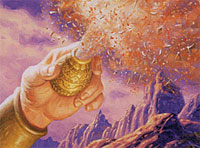

Le seguenti regole sono state ideate per rendere più versatile, differenziata e divertente la classe dei maghi (wizard) attraverso l'inserimento di una serie di talenti speciali a cui hanno accesso, unicamente alla loro creazione, i personaggi. Ciò può avvenire con due diverse modalità:
a) Scelta di un talento speciale
Alla fine della creazione di un personaggio che appartenga alla classe wizard il giocatore può utilizzare 4 punti creazione (sempre che gli siano rimasti) per ottenere un talento speciale (un solo talento può essere acquisito in questo modo). Il giocatore quindi potrà scegliere la sottoclasse dalla quale poi si selezionerà a sorte (con il tiro di 1d20) il talento che costui avrà acquisito.
b) Appartenenza ad una sottoclasse di maghi
In alternativa, solo i personaggi della classe wizard potranno decidere di appartenere ad una delle seguenti sottoclassi di maghi (sempre che ne abbiano i requisiti minimi) ottenendo tutti i benefici e le limitazioni previste dalla stessa. Gli appartenenti a tali sottoclassi saranno considerati comunque della classe wizard, seguiranno però una diversa, specifica, tabella dei punti esperienza.
LE SOTTOCLASSI DEI MAGHI


Requisiti di abilità:
Intelligenza
16, Destrezza 13
Ammontare Minore di Punti Magia Generici
Gli Alchimisti impiegano gran parte delle loro energie mentali nello studio dei procedimenti alchemici avanzati di loro esclusiva competenza. Per tale motivo, costoro ottengono una riduzione del 25% (calcolata per difetto) di tutti i punti magia generici posseduti. Tale riduzione deve essere effettuata dopo che si è calcolato l'ammontare totale dei punti magia generici che l'alchimista avrebbe avuto in considerazione del livello di esperienza, delle statistiche, delle competenze possedute e di ogni altro eventuale fattore.
Talenti
Speciali
(1-5) Conoscenze Alchemiche Avanzate
Gli alchimisti sono esperti nelle arti di laboratorio e nella scienza dell'alchimia. Per tale motivo, gli arcanologi ricevono gratuitamente la competenza Alchemy e necessitano solo del 50% dei punti necessari per imparare le competenze, Alchemy Sense e Sage Knowledge, Alchemy. Inoltre, costoro necessitano solo del 50% dei punti necessari per acquisire slots supplementari nelle tre medesime competenze.
(6-10) Maestria nella Produzione di Liquidi Magici
Gli alchimisti sono maestri nella produzione di liquidi magici. Per tale motivo, quando si dedicano alla produzione di un liquido magico, costoro ottengono un bonus di +1 (+5%) al tiro per verificare se la produzione del liquido è avvenuta con successo. Inoltre, gli alchimisti sono considerati a tutti gli effetti maghi di due livelli di esperienza superiori quando si dedicano alla produzione di tali oggetti magici.
(11-15) Segreto della Trasformazione del Piombo in Oro
Gli alchimisti conoscono
l'arcano procedimento per la trasformazione permanente del piombo in oro. Per
poter operare tale procedimento costoro hanno bisogno di uno specifico
laboratorio contenente la strumentazione necessaria. Questo
laboratorio deve misurare almeno 25 metri quadrati
ed ha un costo
pari a 200 monete d'oro con un costo di manutenzione
mensile pari a 10 monete d'oro.
Per operare tale processo alchemico occorrono
3 giorni di lavoro
ininterrotti dell'alchimista (l'interruzione del lavoro,
infatti, comporta l'automatico fallimento del tentativo). Attraverso tale
processo, quindi, l'alchimista può provare a trasformare un lingotto di piombo
(dal valore di 1 moneta d'oro e dal peso di 4 libbre)
in un lingotto d'oro delle medesime dimensioni avente valore di mercato pari a 100 monete d'oro. Ogni due
livelli di esperienza oltre il primo l'alchimista può provare a trasformare,
nella medesima procedura, un lingotto di piombo supplementare (2 lingotti al 3°
e 4° livello di esperienza, 3 lingotti al 5° e 6° livello di esperienza, e così
via). Per calcolare la percentuale di successo di tale operazione si
applicheranno i seguenti modificatori:
Percentuale base
di successo = 25%
+5% per ogni
livello di esperienza dell'alchimista oltre il primo
+5% se l'alchimista supera una
prova nella competenza alchemy
(+15% se successo critico)
- 5% se l'alchimista
fallisce una prova nella competenza alchemy (-15% se fallimento critico)
+10% per la produzione di oro
di bassa qualità (valore di mercato pari a 50 monete d'oro)
-15% per la produzione di oro
di alta qualità (valore di mercato pari a 200 monete d'oro)
- 5% per ogni lingotto di piombo oltre il primo che l'alchimista vuole
trasformare nel medesimo processo
+5% se l'alchimista dedica al
procedimento 2 giorni di lavoro supplementari
+5% se l'alchimista usa reagenti speciali dal valore pari a 4 monete d'oro per
lingotto di piombo
+3% se dispone di una lampada al quarzo
(valore di 500
monete d'oro e manutenzione mensile di 25 monete d'oro)
+2% se dispone di alambicchi speciali
(valore di 300
monete d'oro e manutenzione mensile di 15 monete d'oro)
Si noti che in nessun caso l'alchimista potrà avere una percentuale di successo
superiore al 95%.
Questo
processo alchemico impiega così tante risorse mentali dell'alchimista ed è così
stancante che il tentativo
non può essere effettuato più di una volta al mese.
(16-20) Creazione delle Polveri Magiche
Polveri Magiche Comuni
Gli alchimisti sono specializzati nell'uso e nella produzione delle comuni
polveri magiche (link),
per tale motivo costoro ottengono un bonus di +1 (+5%) a
tutte le prove di produzione di tali oggetti magici ed il
tempo base di produzione delle stesse sarà ridotto di 1
giorno, inoltre costoro impongono
l'applicazione di un malus di -5% al tiro salvezza
eventualmente previsto per resistere agli effetti di queste polveri magiche.
Polveri Magiche Uniche
Oltre ad essere più abili nella produzione e nell'utilizzo delle comuni polveri
magiche, gli alchimisti conoscono
il segreto dell'utilizzo e della produzione di polveri magiche uniche. Ogni
alchimista può utilizzare unicamente le polveri magiche da se stesso preparate.
Indipendentemente dalla loro tipologia quando un alchimista vuole utilizzare una
polvere magica utilizzerà le seguenti regole:
Utilizzo delle Polveri Magiche : Utilizzare una
polvere magica si considera un'azione complessa che non richiede concentrazione
(può quindi seguire un'azione di mezzo movimento e può essere abortita senza
consumare inutilmente polvere magica). Tale azione, però, richiede una complessa
componente somatica, per cui
può essere effettuata solo se l'alchimista si trova regolarmente in piedi
(non quindi se è anche parzialmente bloccato, se è a cavallo, se è in volo, se
nuota o se si trova in una qualsiasi altra diversa posizione). Data la
complessità dell'azione l'alchimista, quando utilizza la polvere magica, deve
superare una prova di destrezza. Se la prova
riesce, la polvere produrrà i suoi effetti magici; se la prova fallisce, la
polvere non produrrà alcun effetto e sarà stata utilizzata inutilmente. Se la
prova riesce con un successo critico gli eventuali tiri salvezza delle vittime
otterranno una penalità di -1. Se la prova fallisce con un fallimento critico la
polvere avrà effetto ma unicamente nella posizione occupata dall'alchimista
stesso. Si noti che
alcune polveri sono più difficili da maneggiare ed impongono all'alchimista una
certa penalità alla suddetta prova di destrezza. L'azione ha un fattore iniziativa base pari a +4,
l'alchimista può scegliere di ridurre tale fattore
iniziativa a +3 velocizzando il movimento e subendo una
penalità di +1 alla prova di destrezza richiesta
oppure di aumentare tale fattore iniziativa a +5
rallentando il movimento ed ottenendo un
bonus di -1 alla medesima prova. Per poter essere
utilizzata la polvere dovrà essere cosparsa
obbligatoriamente nelle tre posizioni frontali dinanzi l'alchimista e
svolgerà sempre in tale zona il suo effetto ad area.
Produzione e Tipologia di Polveri : Per poter
produrre le polveri magiche gli alchimisti hanno bisogno di uno specifico
laboratorio contenente la strumentazione necessaria. Questo
laboratorio deve misurare almeno 25 metri quadrati
ed ha un costo
pari a 300 monete d'oro con un costo di manutenzione
mensile pari a 15 monete d'oro. Al termine di ogni procedura, se la percentuale
è stata tirata con successo, l'alchimista avrà prodotto un
sacchetto di polvere dal peso di 1 lb. e contenente 10
dosi della polvere magica prescelta. Il sacchetto
per contenere tali polveri ha il costo di 1 moneta d'oro e non può essere
riutilizzato senza compromettere la bontà della polvere magica in esso
contenuta. Ogni polvere richiede uno specifico procedimento, prevede una
determinata possibilità di successo, particolari costi e tempi di produzione,
nonché un livello di esperienza minimo che l'alchimista deve aver raggiunto per
poter provare a produrla. Indipendentemente dal tipo di polvere prodotta, però,
l'alchimista potrà utilizzare le proprie conoscenze nella competenza alchemy per
ottenere i seguenti modificatori:
+10% se il mago utilizza la competenza
Alchemy
ed effettua un successo critico
+5% se il mago utilizza la competenza
Alchemy
e supera la prova nella stessa
-5% se
il mago
utilizza la competenza
Alchemy
e
fallisce la prova nella stessa
-10% se il
mago utilizza la competenza
Alchemy
ed
effettua un fallimento critico
Occorre notare, infine, che in
nessun caso l'alchimista potrà avere una percentuale di successo superiore al
95% e che il procedimento richiede un determinato
ammontare di giorni di lavoro ininterrotti (l'interruzione del lavoro, infatti,
comporta l'automatico fallimento del tentativo di produzione).
Le polveri magiche che possono essere prodotte da un alchimista sono le
seguenti:

Polvere Minore delle Fiamme [1°
livello di esperienza]
Effetto:
La polvere magica brucia
nell'area d'effetto provocando a tutte le creature presenti 2d6 danni da fuoco
magico dimezzabili con un tiro salvezza contro pietrificazione superato con
successo.
Percentuale di successo:
30%, +5% per ogni livello di
esperienza oltre al primo.
Costo di produzione:
35 monete d'oro al -5%,
50 monete d'oro senza modificatori,
65 monete d'oro al +5%.
Tempi di produzione:
3 giorni al -5%,
4 giorni senza modificatori, 5
giorni al +5%.
Polvere Accecante [1° livello di
esperienza]
Effetto:
La polvere magica crea un
bagliore improvviso nell'area d'effetto. Tutti coloro che, al momento del
lancio, si trovano in tale area devono superare un tiro salvezza contro
pietrificazione o rimanere accecati per il resto del round in corso e per tutto
il round successivo. Si noti che questa polvere ha effetto solo su creature
dotate di comuni organi visivi.
Percentuale di successo:
30%, +5% per ogni livello di
esperienza oltre al primo.
Costo di produzione:
35 monete d'oro al -5%,
50 monete d'oro senza modificatori,
65 monete d'oro al +5%.
Tempi di produzione:
3 giorni al -5%,
4 giorni senza modificatori, 5
giorni al +5%.
Polvere Stordente [3° livello di
esperienza]
Effetto:
La polvere magica provoca la
diffusione di una nube di gas verdastro nell'area d'effetto. Tutti coloro che,
al momento del lancio, si trovano in tale area devono superare un tiro salvezza
contro veleno o rimanere storditi (stunned) per il resto del round in
corso e per tutto il round successivo. Si noti che questa polvere si considera a
tutti gli effetti un veleno a contatto e non ha alcun effetto sulle creature
immuni al veleno (come ad esempio sui costruiti e sui non morti).
Percentuale di successo:
25%, +5% per ogni livello di
esperienza oltre al primo.
Costo di produzione:
60 monete d'oro al -5%,
80 monete d'oro senza modificatori,
100 monete d'oro al +5%.
Tempi di produzione:
4 giorni al -5%,
5 giorni senza modificatori, 6
giorni al +5%.
Polvere delle Fiamme [5° livello di
esperienza] (penalità di +1
alla prova di destrezza)
Effetto:
La polvere magica brucia
nell'area d'effetto provocando a tutte le creature presenti 3d8 danni da fuoco
magico dimezzabili con un tiro salvezza contro pietrificazione superato con
successo.
Percentuale di successo:
20%, +5% per ogni livello di
esperienza oltre al primo.
Costo di produzione:
90 monete d'oro al -5%,
120 monete d'oro senza modificatori,
150 monete d'oro al +5%.
Tempi di produzione:
4 giorni al -5%,
6 giorni senza modificatori, 8
giorni al +5%.
Polvere Paralizzante [5° livello di
esperienza] (penalità
di +1 alla prova di destrezza)
Effetto:
La polvere magica provoca la
diffusione di una nube di gas giallognolo nell'area d'effetto. Tutti coloro che,
al momento del lancio, si trovano in tale area devono superare un tiro salvezza
contro veleno o rimanere paralizzati (hold) per il resto del round in
corso e per tutto il round successivo. Si noti che questa polvere si considera a
tutti gli effetti un veleno a contatto e non ha alcun effetto sulle creature
immuni al veleno e/o alla paralisi (come ad esempio sui costruiti e sui non
morti).
Percentuale di successo:
20%, +5% per ogni livello di
esperienza oltre al primo.
Costo di produzione:
90 monete d'oro al -5%,
120 monete d'oro senza modificatori,
150 monete d'oro al +5%.
Tempi di produzione:
4 giorni al -5%,
6 giorni senza modificatori, 8
giorni al +5%.
Polvere della Barriera Gelida [5°
livello di esperienza] (penalità
di +1 alla prova di destrezza)
Effetto:
La polvere magica crea un muro
di ghiaccio nell'area d'effetto. Il muro apparirà unicamente nelle posizioni
che, al momento del lancio, sono libere. Possono essere considerate tali le
posizioni libere da ostacoli fisici e da creature. Inoltre, il muro apparirà
solo nelle posizioni in cui è presente un suolo di tipo solido (anche se
sabbioso). Il muro di ghiaccio è bianco ed impedisce totalmente la vista. Il
muro può essere rotto con attacchi in grado di danneggiare le strutture. A tal
fine, ogni sezione del muro si considererà avere AC 7 e 50 punti ferita. Il muro
resterà in tale posizione per 10 rounds al termine dei quali si sgretolerà
svanendo in polvere sottilissima.
Percentuale di successo:
20%, +5% per ogni livello di
esperienza oltre al primo.
Costo di produzione:
90 monete d'oro al -5%,
120 monete d'oro senza modificatori,
150 monete d'oro al +5%.
Tempi di produzione:
4 giorni al -5%,
6 giorni senza modificatori, 8
giorni al +5%.
Polvere del Gelo [7° livello di
esperienza] (penalità
di +1 alla prova di destrezza)
Effetto:
La polvere magica provoca
l'istantanea glaciazione dell'area d'effetto. Tutti coloro che, al momento
del lancio, si trovano in tale area subiranno 3d6 danni da freddo dimezzabili
con un tiro salvezza contro pietrificazione superato con successo. Inoltre, se
il tiro salvezza per dimezzare i danni non è stato superato le vittime
resteranno incapacitate per il resto del round in corso e per i cinque rounds
successivi. Questa polvere non produce alcun effetto sulle creature immuni al
freddo.
Percentuale di successo:
15%, +5% per ogni livello di
esperienza oltre al primo.
Costo di produzione:
150 monete d'oro al -5%,
200 monete d'oro senza modificatori,
250 monete d'oro al +5%.
Tempi di produzione:
5 giorni al -5%,
7 giorni senza modificatori, 9
giorni al +5%.
Polvere Dimensionale [7° livello di
esperienza] (penalità
di +1 alla prova di destrezza)
Effetto:
La polvere magica crea
scintille multicolore nell'area d'effetto. Tutti coloro che, al momento
del lancio, si trovano in tale area devono superare un tiro salvezza contro
incantesimi. Se il tiro salvezza fallisce costoro saranno teletrasportati
senza possibilità di errore in una direzione casuale a 3d3*3 metri di distanza
dal punto di origine. Perché la posizione di arrivo risulti valida la stessa
deve essere priva di ostacoli fisici e non occupata da altre creature. Inoltre,
occorre che la posizione di arrivo disponga di una superficie di appoggio (per
tale motivo non saranno considerate possibili posizioni di arrivo che abbiano un
dislivello pari o superiore a 3 metri rispetto alla posizione di origine). Anche
un liquido può essere considerato una valida superficie di appoggio. Se la
posizione di arrivo selezionata casualmente non risulta una posizione valida la
polvere magica non svolgerà alcun effetto sulla creatura. Questa polvere non
produce alcun effetto sulle creature di dimensione pari o superiore a Huge.
Percentuale di successo:
15%, +5% per ogni livello di
esperienza oltre al primo.
Costo di produzione:
150 monete d'oro al -5%,
200 monete d'oro senza modificatori,
250 monete d'oro al +5%.
Tempi di produzione:
5 giorni al -5%,
7 giorni senza modificatori, 9
giorni al +5%.
Polvere Maggiore delle Fiamme [9°
livello di esperienza] (penalità
di +2 alla prova di destrezza)
Effetto:
La polvere magica brucia
nell'area d'effetto provocando a tutte le creature presenti 4d10 danni da fuoco
magico dimezzabili con un tiro salvezza contro pietrificazione superato con
successo.
Percentuale di successo:
5%, +5% per ogni livello di
esperienza oltre al primo.
Costo di produzione:
210 monete d'oro al -5%,
280 monete d'oro senza modificatori,
350 monete d'oro al +5%.
Tempi di produzione:
6 giorni al -5%,
8 giorni senza modificatori, 10
giorni al +5%.


Requisiti di abilità:
Intelligenza
16, Saggezza 9
Minore Specializzazione nelle Formule del Nuovo Metodo
A causa della loro dedizione ai rituali dell'Antico Metodo gli arcanologi sono meno specializzati nell'uso delle formule che caratterizzano il nuovo metodo. Per tale motivo, gli arcanologi non ricevono alcun beneficio dal raggiungimento del terzo e del quarto grado di conoscenza delle scuole di magie nei vari livelli di potere, ivi compresi i punti magia specifici supplementari concessi a chi ottiene tale conoscenza. Unica eccezione consiste nella circostanza che costoro ottengono il bonus previsto dal quarto grado di conoscenza quando si scrive un incantesimo su una pergamena magica. Ciò nonostante, costoro devono comunque ottenere tali gradi di conoscenza se desiderano imparare le magie di terzo e quarto grado di difficoltà senza l'applicazione dei malus dovuti ad una conoscenza di grado inferiore nella relativa scuola di magia. Per lo stesso motivo gli arcanologi non possono acquisire il titolo ed i benefici spettanti agli elementalisti della scuola evocation.
Talenti
Speciali
(1-5) Conoscenze Arcane
Gli arcanologi sono esperti nelle arti di laboratorio e nello studio dei rituali arcani. Per tale motivo, gli arcanologi ricevono gratuitamente la competenza Arcanology, inoltre necessitano solo del 50% dei punti necessari per imparare le competenze Alchemy, Alchemy Sense, Construction Lore, Herbalism, Thaumaturgy e Scribe (si noti che questo beneficio non si estende agli slots supplementari eventualmente acquisiti dal personaggio nelle medesime competenze).
Gli arcanologi, inoltre, sono a conoscenza di un rituale magico dell'antico
metodo che possono effettuare su qualsiasi verga della stregoneria. In
particolare, costoro
possono caricare le verghe della stregoneria
per farle contenere magie da costoro conosciute al fine di utilizzarle
successivamente attraverso l'uso della verga. L'arcanologo può inserire nella
verga qualsiasi incantesimo conosca ed abbia ripassato dei primi tre livelli di
potere che sia della medesima scuola (od elemento specifico per l'evocazione)
scelta per incantare la verga della stregoneria. Per poter provare a caricare
una verga della stregoneria l'arcanologo deve poter lavorare in un
laboratorio utile per la creazione di minor enchantment.
Per provare a caricare una singola magia l'arcanologo deve impiegare un
intero giorno di lavoro per ogni livello di potere
dell'incantesimo che prova a caricare
ed utilizzare reagenti magici il cui valore dipende dalla magia che prova a
caricare secondo il seguente schema:
Incantesimi di 1° livello di potere:
5 monete d'oro per grado
di difficoltà.
Incantesimi di 2° livello di potere:
10 monete d'oro per grado
di difficoltà.
Incantesimi di 3° livello di potere:
25 monete d'oro per grado
di difficoltà.
Al termine del giorno di lavoro l'arcanologo dovrà superare una
prova di intelligenza con una penalità pari al livello di potere
dell'incantesimo che ha provato a caricare
nella verga. Se la prova ha successo l'arcanologo avrà caricato la magia nella
verga. Se la prova riesce con un successo critico l'arcanologo avrà caricato la
verga e risparmiato interamente i reagenti magici. Se la prova fallisce l'arcanologo
non avrà caricato la verga ma avrà comunque speso tempo e risorse. Se la prova
fallisce con un fallimento critico l'arcanologo non avrà caricato la verga
spendendo tempo e risorse e non potrà sottoporre la medesima verga a caricamento
prima che sia trascorso un intero mese. Si noti che
l'arcanologo non dovrà utilizzare i componenti materiali previsti
dall'incantesimo in fase di caricamento, infatti,
dovrà possederli ed utilizzarli regolarmente al momento del lancio
dell'incantesimo.
L'ammontare di incantesimi massimi che possono essere caricati su una verga
della stregoneria dipende dalla sua potenza. In particolare, rileverà
esclusivamente il valore di punti esperienza della verga della stregoneria
grezza (125 xp) nonché quello dei
poteri magici di incanalamento di energia magica
posseduti dalla stessa (non si considereranno quindi gli ulteriori poteri) [link].
Orbene, ogni incantesimo, utilizzerà spazio pari ad un ammontare di punti
esperienza dipendente dal suo livello di potere come indicato nel seguente
schema:
Incantesimi di 1° livello di potere:
40 punti esperienza.
Incantesimi di 2° livello di potere:
85 punti esperienza.
Incantesimi di 3° livello di potere:
185 punti esperienza.
Quindi, per fare un esempio, in una verga della
stregoneria grezza (125 xp) potranno essere caricati fino a tre incantesimi di
primi livello di potere oppure un incantesimo di primo ed un incantesimo di
secondo livello di potere.
L'arcanologo può caricare nella verga esclusivamente magie nella loro forma
comune senza che possa modificarne il metodo di lancio, inoltre le magie saranno
sempre caricate
ad un livello di lancio pari al livello di esperienza raggiunto dall'arcanologo,
fino ad un massimo di 6° livello di lancio.
Una volta caricati, gli incantesimi potranno essere rilasciati in qualsiasi
momento esclusivamente dall'arcanologo che li ha caricati utilizzando la verga.
Si tratta di una normale procedura di lancio di incantesimi attraverso la verga
alla quale si applicheranno solo le seguenti eccezioni:
* L'arcanologo non
utilizzerà i suoi punti magia per lanciare l'incantesimo ma userà quello
caricato nella verga che, una volta lanciato sarà consumato e libererà lo spazio
occupato nella verga in punti esperienza.
* La magia non si
considererà lanciata dall'arcanologo al fine del pagamento del supplemento in
punti magia per il lancio di un medesimo incantesimo nella stessa giornata.
* La magia,
considerandosi un potere proprio della verga, sarà lanciata in modo sicuro senza
che debba effettuarsi il tiro del misscast.
(6-10) Maestria nell'Incantamento
Gli
arcanologi sono maestri nei rituali di incanalamento dell'energia magica
utilizzati per la costruzione di oggetti magici. Per tale motivo, quando si
dedicano alla costruzione di un oggetto magico (ivi compresi i minor enchantments,
le pozioni e le pergamene magiche), costoro ottengono un
bonus di +1 (+5%) al tiro per
verificare se la produzione dell'oggetto è avvenuta con successo. Inoltre, gli
arcanologi ricevono
i seguenti benefici specifici:
*
Minor Enchantment: Sono
considerati, a tutti gli effetti, come maghi di un livello superiore quando si
dedicano alla costruzione di minor enchantment.
*
Pergamene dei Maghi: Quando scrivono una pergamena dei maghi
costoro possono decidere di scrivere un qualsiasi incantesimo ad un livello di
lancio superiore rispetto al loro livello di esperienza. Tale beneficio può
essere cumulato con quello eventualmente previsto dall'utilizzo della competenza Scribe.
*
Bacchette Magiche: Quando
riescono nella creazione di una bacchetta magica (non in caso di successo
critico) costoro possono tirare 2 dadi da 20 per determinare l'ammontare delle
cariche della bacchetta e scegliere il risultato migliore. Inoltre, quando
falliscono in una prova per la creazione di una bacchetta magica (ad eccezione
di un fallimento critico)
costoro possono riprovare ad incantare la bacchetta utilizzando un ammontare
supplementare di reagenti pari all'1% del valore finale della bacchetta ed un
ammontare di giorni pari ad 1/10 dell'ammontare originario (arrotondato per
eccesso).
(11-15)
Maestria nell'Uso
delle Verghe e delle Bacchette Magiche
Gli arcanologi sono esperti nell'uso delle verghe e delle bacchette magiche. Per tale motivo, gli arcanologi ricevono gratuitamente la competenza Wands Mastery, inoltre costoro hanno una speciale abilità nell'utilizzo delle verghe magiche. Infatti, quando un arcanologo utilizza i poteri di incanalamento di energia magica di una verga della stregoneria (link) per lanciare i propri incantesimi costui ha una certa percentuale di trattenere il potere magico della verga risparmiando le cariche necessarie al lancio. La percentuale di successo, che dipende dal livello dell'arcanologo e dal numero di cariche utilizzate nel lancio dell'incantesimo, è calcolata con la seguente formula: 50% + 1% per livello di esperienza dell'arcanologo oltre il primo, -7% per ogni carica, oltre la prima, utilizzata nel lancio dell'incantesimo. Si noti che questo tiro va ripetuto ad ogni lancio di incantesimo effettuato utilizzando poteri di incanalamento di energia magica della verga. Si tratta di un unico tiro che, qualora effettuato con successo, permette all'arcanologo di risparmiare tutte le cariche utilizzate nel lancio della magia. Infine, occorre osservare che, questo dono non permette all'arcanologo di risparmiare cariche di verghe della stregoneria quando utilizzano poteri diversi da quelli di incanalamento di energia magica.
(16-20) Rituale di Animazione del Servitore di Terracotta
Gli arcanologi conoscono un rituale dell'Antico Metodo che consente loro di animare un Servitore di Terracotta. Si tratta di un costruito di terracotta che gli arcanologi possono utilizzare come loro guardia personale. Ogni arcanologo può animare e controllare, contemporaneamente, un unico Servitore di Terracotta. Per poter effettuare questo rituale gli arcanologi necessitano di Camera dell'Animazione. Si tratta di un locale di almeno 30 metri quadrati al cui interno devono trovarsi gli strumenti necessari alla creazione del servitore. Tali strumenti, tra i quali sono presenti il forno a carbone, la vasca di raffreddamento e gli scalpelli, hanno un costo pari a 300 monete d'oro ed un costo di manutenzione mensile pari a 15 monete d'oro. Un arcanologo che dispone di una Camera dell'Animazione, quindi, può dedicarsi alla costruzione del suo Servitore di Terracotta. Per costruire il servitore il mago deve effettuare 30 giorni ininterrotti di lavoro e deve disporre di componenti materiali e reagenti pari a 250 monete d'oro per dado vita del costruito che desidera realizzare (se, per qualsiasi motivo, il mago è costretto ad interrompere le giornate di lavoro dovrà ripetere tutto il lavoro e comprare nuovamente i reagenti). L'arcanologo può costruire un Servitore con un ammontare massimo di dadi vita dipendente dal proprio livello di esperienza, come indicato nella seguente tabella:
|
Livello |
Max DV |
Livello |
Max DV |
Livello |
Max DV |
Livello |
Max DV |
| 1° | 1 | 6° | 4 | 11° | 7 | 16° | 8 |
| 2° | 1 | 7° | 5 | 12° | 7 | 17° | 9 |
| 3° | 2 | 8° | 5 | 13° | 7 | 18° | 9 |
| 4° | 2 | 9° | 6 | 14° | 8 | 19° | 9 |
| 5° | 3 | 10° | 6 | 15° | 8 | 20° | 10 |

Le statistiche basi del Servitore di Terracotta saranno le seguenti:
| Climate/Terrain | Any |
| Frequency | Rare |
| Organization | Solitary |
| Activity Cycle | Any |
| Diet | Nil |
| Intelligence | Non (0) |
| Treasure | Nil |
| Alignment | Neutral |
| No. Appearing | 1 |
| Armor Class | 6 |
| Movement | 6 |
| Hit Dice | 1 (6 punti ferita a dado vita) |
| Thac0 | 20 - 1 per DV superiore al 1° |
| No. of Attacks | 2 pugni |
| Damage / Attacks | 1d4/ 1d4 (impatto) |
| Special Attacks | None |
| Special Defenses | Vedi sotto* |
| Magic Resistance | None |
| Size | M (alto 2 metri) |
| Morale | Fearless (20) |
* Il Servitore di Terracotta possiede tutte le immunità tipiche dei costruiti.
Il Servitore di
Terracotta si considera avere un punteggio di forza pari a 18 (non
straordinario).
Il Servitore di Terracotta ha una
penalità di -1 a tutti i tiri salvezza basati sulla destrezza.
Il Servitore di Terracotta ha un peso pari a 150 kg. (300 lbs.).
Poteri Speciali : Quando l'arcanologo crea il costruito può donargli uno o più poteri. In particolare, l'arcanologo può utilizzare 2 punti potenziamento per livello di esperienza scegliendo i poteri da infondere al Servitore nella lista sottostante (l'attribuzione di questi punti potenziamento al Servitore è quindi compresa nei tempi e nei costi di costruzione e di modificazione). Se l'arcanologo possiede la competenza Construction Lore e riesce in una prova nella stessa in fase di creazione il servitore otterrà un punto potenziamento supplementare gratuito. Oltre a tali punti, l'arcanologo può assegnare al Servitore alcuni punti potenziamento supplementari. L'ammontare massimo di punti supplementari attribuibili è pari alla metà del livello di esperienza dell'arcanologo arrotondata per eccesso (1 al 1° e 2° livello di esperienza, 2 al 3° e 4° livello di esperienza, ecc... ecc...). In fase di creazione, per attribuire tali punti supplementari, l'arcanologo dovrà impiegare 2 ulteriori giorni di lavoro per ogni punto attribuito; inoltre, costui dovrà versare, per ogni singolo punto attribuito, un ammontare di monete d'oro pari a 200 monete d'oro + 100 monete d'oro cumulative per ogni punto supplementare oltre al primo. Per fare un esempio, quindi, un arcanologo del quinto livello di esperienza pagherà 200 monete d'oro il primo punto supplementare, 300 monete d'oro il secondo punto supplementare e 400 monete d'oro il terzo punto supplementare. In fase di modifica, l'arcanologo impiegherà la metà del tempo e del denaro necessario all'attribuzione dei punti potenziamento supplementari posseduti dal Servitore di Terracotta. Occorre osservare che i punti potenziamento supplementari devono essere necessariamente attribuiti al Servitore in fase di creazione e che, una volta attribuiti, tali punti saranno mantenuti dal Servitore anche a seguito di eventuali modifiche.
Placche di Stagno - 2 punti
pot. - Abbassano la classe armatura del Servitore ad AC 5
Placche di Rame - 4 punti pot. - Abbassano la classe armatura del
Servitore ad AC 4 [1],
+20 kg. (40 lbs.)
Placche di Bronzo - 7 punti pot. - Abbassano la classe armatura del
Servitore ad AC 3 [1],
+20 kg. (40 lbs.)
Placche di Ferro - 11 punti pot. - Abbassano la classe armatura del
Servitore ad AC 2 [2],
+30 kg. (60 lbs.)
Placche di Acciaio - 16 punti pot. - Abbassano la classe armatura del
Servitore ad AC 1 [2],
+30 kg. (60 lbs.)
Irrobustimento Minore - 2 punti
pot. - Il Servitore ottiene 7 punti ferita a dado vita
[1],
+10 kg. (20 lbs.)
Irrobustimento Maggiore - 4 punti pot. - Il Servitore ottiene 8 punti
ferita a dado vita [2],
+20 kg. (40 lbs.)
Compattamento della Terracotta - 1 punto pot. - Il Servitore ottiene 3 punti ferita supplementari
Arti Inferiori Rinforzati - 4 punti
pot. - Il Servitore ottiene un fattore movimento pari a 9
Arti Inferiori Poderosi - 7 punti pot. - Il Servitore ottiene un
fattore movimento pari a 12
Rafforzamento Muscolare - 1 punto pot. - Il Servitore si considera avere un punteggio di forza pari a 18/01 (straordinario).
Arti Superiori Rinforzati - 3 punti
pot. - Ogni punto del Servitore provoca 1d6 danni da impatto
Arti Superiori Poderosi - 5 punti pot. - Ogni punto del Servitore
provoca 1d8 danni da impatto
Pugni Appesantiti - 2 punti pot. - Gli attacchi del Servitore ottengono +1 ai danni
Calibratura degli Arti Superiori - 4 punti pot. - Il Servitore ottiene +1 alla propria Thac0
Impatti Devastanti - 3 punti pot. - Quando il Servitore, attaccando una creatura, effettua un tiro per colpire naturale pari a 18, 19 o 20, lo stesso riceverà un bonus di +3 ai danni al dado base delle ferite provocate dal proprio attacco.
Critico Superiore - 1 punto
pot. -
Quando il Servitore, attaccando una creatura, effettua un colpo critico, lo
stesso tirerà 1d12 (anziché 1d10) sulla tabella dei critici dei mostri per
determinare l'effetto critico causato alla propria vittima.
Critico Migliorato - 3 punti pot. -
I colpi andati a segno del Servitore provocheranno effetti critici qualora
costui abbia effettuato un tiro per colpire naturale pari a 19 o 20.
Attacchi Velocizzati - 5 punti pot. -
Quando il Servitore, attaccando una creatura, effettua un tiro di iniziativa
pari od inferiore a 5 lo stesso potrà effettuare un singolo ulteriore attacco a
fine round sulla medesima creatura (sempre che costui la possa ancora
attaccare).
Colpo Stordente - 5 punti pot. -
Quando il Servitore, attaccando una creatura, effettua un tiro per colpire
naturale pari a 18, 19 o 20, la vittima colpita dovrà effettuare un tiro
salvezza contro raggio della morte per evitare di restare stordita (stunned)
a causa dell'impatto per 1d2 rounds.
Resistenza Inferiore - 4
punti pot. - Il Servitore riduce il danno di ogni attacco fisico non
magico di 2 punti
Resistenza Minore - 6 punti pot. - Il Servitore riduce il danno
di ogni attacco fisico non magico di 3 punti
Resistenza Maggiore - 9 punti pot. - Il Servitore riduce il
danno di ogni attacco fisico non magico di 4 punti
Resistenza Superiore - 13 punti pot. - Il Servitore riduce il
danno di ogni attacco fisico non magico di 5 punti
Schermatura Termica - 3 punti pot. - Il Servitore subisce solo il 50% (per difetto) dei danni da fuoco o calore
[1] Il Servitore che
possiede questo potere non potrà ricevere gli Arti Inferiori Poderosi
[2] Il Servitore che possiede questo potere non potrà ricevere gli Arti
Inferiori Poderosi e gli Arti Inferiori Rinforzati
Rottura ed Riparazione : Se, per qualsiasi motivo, il Servitore raggiunge un ammontare di punti ferita pari od inferiore a 0, lo stesso si sgretolerà distruggendosi definitivamente (l'arcanologo, quindi, dovrà procedere alla creazione di un nuovo Servitore di Terracotta). Qualora, invece, il costruito viene solo ferito, l'arcanologo potrà ripararlo portandolo presso la Camera di Animazione. Per la riparazione l'arcanologo avrà bisogno di componenti materiali dal valore di 20 monete d'oro per punto ferita che desidera riparare e lo stesso potrà riparare fino a 3 punti ferita per ogni giorno di lavoro dedicato a tale operazione.
Modifiche ed Implementazioni : In ogni momento l'arcanologo può, in tutto
o in parte, modificare i poteri attribuiti al proprio Servitore di Terracotta
lavorando all'interno della Camera di Animazione. Per poter essere sottoposto
a modifica od implementazione, però, è necessario che il Servitore di Terracotta
sia al massimo dei propri punti ferita. Per procedere a tale
operazione
il mago deve effettuare 10
giorni ininterrotti di lavoro e deve disporre di
componenti materiali e reagenti pari a 125 monete
d'oro per dado vita del costruito. Qualora siano
stati attribuiti in fase di costruzione punti potenziamento supplementari al
Servitore, l'arcanologo dovrà impiegare l'ulteriore ammontare di tempo e di
denaro previsto.
Con la medesima procedura, l'arcanologo può anche aumentare l'ammontare di
dadi vita del proprio costruito (se ad es. l'arcanologo ha raggiunto un livello
di esperienza che gli permette di possedere un costruito di maggiori dadi vita),
in questo caso l'arcanologo dovrà utilizzare, oltre al normale tempo ed
alle normali risorse impiegate in caso di modifica,
250 monete d'oro per ogni dado vita superiore donato al
Servitore (in luogo delle previste 125 monete d'oro a dado vita).
Rituale Magico di Riparazione: L'arcanologo è a conoscenza di un rituale magico con il quale è in grado di riparare parzialmente il Servitore di Terracotta fuori dalla Camera di Animazione. Ogni volta che il Servitore di Terracotta subisce danni, 1/3 di questi danni (calcolati per eccesso) saranno danni strutturali e come tali riparabili solo con il normale procedimento all'interno della Camera di Animazione. Per fare un esempio, qualora il Servitore subisca 5 danni con un colpo, 2 di questi danni dovranno essere riportati come danni strutturali e potranno essere riparati solo nella Camera di Animazione con normale procedimento.
La restante parte di
danni, invece, sarà riparabile con il rituale magico. Il
rituale richiede 1 turno durante il
quale il Servitore deve rimanere immobile e l'arcanologo deve toccarlo restando
in concentrazione. Durante il rituale l'arcanologo applicherà della polvere di
granito e di gemme per riparare il costrutto utilizzando punti magia. Quando l'arcanologo
inizia il rituale, infatti, costui dovrà decidere l'ammontare di punti ferita
che desidererà siano riparati al termine dello stesso. In particolare,
per ogni 3 punti magia generici (non specifici di scuola ed in alcun modo
riducibili) utilizzati l'arcanologo riparerà un ammontare di punti ferita persi
dal Servitore dipendente dal livello di potere dal quale li ha utilizzati
secondo il seguente schema:
1° e 2° livello di potere: 1
punto ferita ogni 3 punti magia generici
3° e 4° livello di potere: 2
punti ferita ogni 3 punti magia generici
5° e 6° livello di potere: 3
punti ferita ogni 3 punti magia generici
7° e 8° livello di potere: 4
punti ferita ogni 3 punti magia generici
9° livello di potere: 5 punti
ferita ogni 3 punti magia generici
L'arcanologo, inoltre dovrà utilizzare polvere di granito
e di gemme dal valore di 30 monete d'oro per ogni punto ferita che
desidera riparare. Tale ammontare di polvere ha un peso pari ad 1/10 di libbra.
Se, per qualsiasi motivo, il rituale è interrotto dall'arcanologo dopo essere
iniziato, oppure costui perde la concentrazione, costui non avrà riparato alcun
punto ferita ma avrà sprecato punti magia e reagenti.


Requisiti di abilità: Intelligenza
15, Carisma
13
Requisiti di allineamento: Evil
(anche per la scelta dei singoli talenti attraverso l'utilizzo dei punti
creazione)
Malus del Demonologo
I costanti contatti che il Demonologo intrattiene con i Piani Esterni
Inferiori possono dar luogo in determinate occasioni all'apertura di varchi
interdimensionali dai quali elementi demoniaci penetrano nel Primo Piano
Materiale. In termini di gioco, quando il Demonologo lancia un incantesimo ed
effettua il risultato immediatamente successivo a quello per il quale si sarebbe
verificato un miss cast (nella normalità dei casi, quindi, quando tira un 2
naturale), si verificherà una Demonic Surge alla fine del round in corso. La
Demonic Surge sarà sempre centrata sul Demonologo. Per determinare gli effetti
della stessa si tiri 1d6 e si consulti la seguente tabella:
1)
Nube Tossica:
Una nube
di gas giallognolo velenoso
si sprigiona in un'area di 9 metri di diametro
per poi svanire alla fine del round. Tutte le creature dovranno superare un tiro
salvezza contro veleno per evitare gli effetti del seguente veleno a contatto:
Onset 1 round, Delay
3 rounds, Effetti 0 / 3 x livello di potere massimo a cui il Demonologo ha
accesso, Tiro
Salvezza senza mod., Assuefazione none.
2)
Pioggia
Infuocata: Una pioggia infuocata cade in un'area di 15
metri di diametro provocando a tutte le creature presenti 1d2 danni da fuoco
magico per livello di esperienza del Demonologo, danni
dimezzabili superando un tiro
salvezza contro incantesimi.
Si consideri questo effetto una magia della scuola Evocation Fire di livello di
potere pari al livello di potere massimo a cui
il Demonologo
ha accesso e di livello di lancio pari al livello di esperienza del Demonologo.
3)
Nube
Maleodorante:
Una nube maleodorante si sprigiona in un'area di
12 metri di diametro provocando gli effetti di un incantesimo di Stinking Cloud.
La nube permarrà nell'area d'effetto per 1 round per livello di esperienza del
Demonologo.
Ai fini dei tiri salvezza questo
effetto si considererà una magia della scuola Evocation Smoke di livello di
potere pari al livello di potere massimo a cui
il Demonologo
ha accesso e di livello di lancio pari al livello di esperienza del Demonologo.
4)
Indebolimento Demoniaco:
Le energie fisiche del Demonologo sono
debilitate dalle energie dei Piani Esterni Inferiori, lo stesso ha diritto ad
effettuare un tiro salvezza contro raggio della morte. Se il tiro salvezza
fallisce il Demonologo risulterà incapacitato nei successivi 1d3+1 rounds.
5)
Muro di Calore:
Un muro di calore intenso si sprigiona in
un'area di 9 metri di diametro. Alla fine di ogni round tutte le creature
presenti nell'area subiranno 3 danni da calore.
L'area di calore permarrà nell'area
per 1 round per livello di esperienza del Demonologo.
6) Globo Infuocato: A tre metri sopra la testa del
Demonologo appare un globo di fuoco (si noti che se non vi è spazio sufficiente
per far apparire il globo di fuoco dovrà ripetersi il tiro di dado) dal quale,
alla fine del round in corso ed alla fine di ogni successivo round, partirà una
sfera infuocata che colpirà una creatura a caso fra tutte quelle presenti, ad
eccezione delle creature demoniache, entro 30 metri di distanza dal globo. La
vittima avrà diritto ad effettuare un tiro salvezza contro pietrificazione per
evitare di essere colpito dalla sfera infuocata. Se il tiro salvezza fallisce la
vittima subirà 1d3 danni da fuoco magico ogni 2 livelli di esperienza del
Demonologo (1d3 al 1° e 2° livello, 2d3 al 3° e 4° livello, e così via...). Il
globo di fuoco svanirà una volta trascorsi 10 rounds.
Talenti
Speciali
(1-5) Richiamo Demoniaco
Il Demonologo conosce i
segreti di un antico rituale di magia oscura attraverso il quale richiamare nel
Primo Piano Materiale esseri demoniaci dalla potenza direttamente proporzionale
al suo livello di esperienza. Si tratta di una summonazione reale attraverso la
quale il Demonologo apre un varco tra il Primo Piano Materiale ed i Piani
Esterni Inferiori attirando la creatura prescelta dinanzi a lui. Sempre
attraverso la magia del rituale, inoltre, il demonologo prova a costringere la
creatura richiamata a servirlo per un periodo di tempo determinato dallo stesso
rituale.
Regole per effettuare il Rituale:
Per effettuare il rituale il Demonologo disegna su un pavimento solido un
cerchio del richiamo di 3 metri di diametro,
posizionando lungo la sua circonferenza le candele rituali ed utilizzando gli
altri componenti materiali richiesti. All'inizio del rituale, inoltre, il
Demonologo deve utilizzare 8 punti magia generici o
specifici della scuola Summoning esclusivamente del
livello di potere relativo al demone prescelto. Il rituale ha una
durata di 5 rounds durante i quali il Demonologo
deve mantenere la concentrazione come se lanciasse un incantesimo e deve restare
in una posizione adiacente al cerchio del richiamo.
Se, per qualsiasi motivo, il rituale è interrotto oppure il Demonologo perde la
concentrazione prima della sua fine il rituale si considererà fallito, non sarà
richiamato alcun essere demoniaco, saranno stati consumati i punti magia
richiesti ed i componenti materiali. Al termine dei 5 rounds il Demonologo dovrà
effettuare la prova per determinare se il rituale ha avuto successo. Il Demonologo
può effettuare più tentativi al giorno
(sempre che disponga dell'ammontare di punti magia e dei
componenti materiali richiesti per effettuare il tentativo) ma, in ogni caso,
non può effettuare un nuovo tentativo fino a che ha sotto
il suo controllo un qualsiasi Demone precedentemente richiamato. Con
un'azione complessa della durata di un intero round, che utilizza componenti
verbali e somatici e che richiede il mantenimento della concentrazione, il
Demonologo può, però, liberare un Demone che ha sotto controllo permettendo allo
stesso di svanire per ritornare al proprio piano di esistenza originario.
Per calcolare la percentuale di successo di tale
operazione si applicheranno i seguenti modificatori:
Percentuale base
di successo = 35%
+4% per ogni
livello di esperienza oltre il minimo previsto per il richiamo del demone
prescelto
+2% per numero di lingue
previste dal punteggio di intelligenza posseduto dal Demonologo
+3% per valore di Loyality Base previsto dal punteggio di carisma posseduto dal
Demonologo
+2% se il Demonologo supera una
prova nella competenza Demonology
(+5% se successo critico)
- 2% se il Demonologo
fallisce una prova nella competenza Demonology (-5% se fallimento critico)
+2% se il Demonologo supera una
prova nella competenza Planar Geography
(+5% se successo critico)
- 2% se il Demonologo
fallisce una prova nella competenza Planar Geography (-5% se fallimento critico)
+2% se il Demonologo supera una
prova nella competenza Planar Geometry
(+5% se successo critico)
- 2% se il Demonologo
fallisce una prova nella competenza Planar Geometry (-5% se fallimento critico)
+5% se il Demonologo usa reagenti speciali
supplementari dal valore pari al 20% del costo totale del rituale
+10% se il Demonologo prova a soggiogare la creatura demoniaca per un tempo pari
a 30 minuti
+5% se il Demonologo prova a soggiogare la creatura demoniaca per un tempo pari
a 45 minuti
nessuna modifica se
il Demonologo prova a soggiogare la creatura demoniaca per un tempo pari a 60
minuti
- 5% se il Demonologo prova a
soggiogare la creatura demoniaca per un tempo pari a 75 minuti
- 10% se il Demonologo prova a soggiogare la creatura demoniaca per un tempo
pari a 90 minuti
+1% se il Demonologo ha il
primo grado nella scuola Summoning nel livello di potere relativo al demone
prescelto
+2% se il Demonologo ha il secondo grado nella scuola Summoning nel livello di
potere relativo al demone prescelto
+4% se il Demonologo ha il terzo grado nella scuola Summoning nel livello di
potere relativo al demone prescelto
+8% se il Demonologo ha il quarto grado nella scuola Summoning nel livello di
potere relativo al demone prescelto
+1% ogni punto magia supplementare spesi per il tentativo di richiamo (del
medesimo livello di potere) fino ad un massimo di 5%
Si noti che in nessun caso il Demonologo potrà avere una percentuale di successo
superiore al 95%.
Se, quindi, il Demonologo
effettua la prova con successo all'interno del
cerchio del richiamo apparirà in una nube di gas verdastro il demone prescelto,
soggiogato dalla magia del rituale ai voleri del Demonologo per la durata
stabilita dallo stesso durante il rituale. Il Demonologo potrà scegliere tra 30,
45, 60, 75 oppure 90 minuti modificando in tal modo le proprie probabilità di
successo. La creatura demoniaca richiamata capirà i comandi del Demonologo (per
imporre i quali è necessario un round e comunicare con formule magiche come per
le altre summonazioni) e li eseguirà senza esitazione. Al verificarsi di alcune
circostanze, però, il potere magico del rituale che mantiene il demone
richiamato nel Primo Piano Materiale si dissiperà con la conseguenza che
il demone sparirà in una nube di gas verdastro ritornando immediatamente
nel suo piano di esistenza originario. Ciò avviene nelle seguenti circostanze:
- alla fine
dell'ultimo round di durata del rituale;
- istantaneamente quando il demone muore;
- alla fine del round nel quale al demone è stato dato l'ordine di ritornare al
suo piano di esistenza originario;
- alla fine del round nel quale al demone è stato dato un ordine considerabile
(a giudizio del Dungeon Master) suicida;
- alla fine del round nel quale il demone ed il Demonologo si troveranno ad una
distanza superiore ai 30 metri.
Se, invece, il Demonologo
fallisce la prova del
rituale (si noti che un tiro da 96 a 100 si considera sempre un
fallimento)occorre verificare cosa è successo tirando 1d20 e consultando il
seguente schema, si noti che indipendentemente dal risultato effettuato saranno
stati consumati i punti magia richiesti ed i componenti materiali utilizzati per
provare il rituale:
1-5)
Il rituale è fallito, la creatura demoniaca non è
richiamata nel Primo Piano Materiale, non accade nulla.
6-10) Il rituale è fallito, la creatura demoniaca
non è richiamata nel Primo Piano Materiale ma dal cerchio di evocazione di
sprigiona istantaneamente una nube di gas giallognolo velenoso che coinvolge
tutti coloro sono presenti entro 15 metri dal cerchio per poi svanire alla fine
del round. Tutte le creature dovranno superare un tiro salvezza contro veleno
per evitare gli effetti del seguente veleno a contatto:
Onset 1 round, Delay
3 rounds, Effetti 0 / 3 x livello di potere relativo al demone prescelto, Tiro
Salvezza senza mod., Assuefazione none.
11-17) Il rituale è fallito, la creatura demoniaca
appare nel Primo Piano Materiale (all'interno del cerchio del richiamo) ma non è
sotto il controllo del Demonologo. Il demone sarà mosso da un fortissimo
sentimento di vendetta nei confronti di chi ha effettuato il rituale e farà di
tutto per ucciderlo (potendo ovviamente affrontare anche altre creature qualora
le stesse si intromettano). Il demone svanirà immediatamente alla morte del
Demonologo (non essendo sufficiente il raggiungimento dello stato comatoso),
oppure
dopo che sono trascorsi 10 rounds dalla sua apparizione.
18-20) Il rituale è fallito, il rituale del
Demonologo ha attirato le attenzioni di potenti entità demoniache che dimorano
nei Piani Esterni Inferiori e
permette loro di interferire nel Primo Piano Materiale. Per punire i mortali per
il loro tentativo di soggiogare un demone queste entità avvolgono nelle fiamme
il demonologo e tutte le creature presenti entro 30 metri dal cerchio del
richiamo. Costoro subiscono 1d3 danni da fuoco magico per livello di esperienza del
Demonologo che ha provato il rituale.
Creature Demoniache soggette al Richiamo del Demonologo:
Man mano che il Demonologo raggiunge determinati livelli di esperienza costui
può richiamare creature demoniache sempre più potenti (potendo ovviamente sempre
scegliere di richiamare creature di potenza inferiore). In base alla creatura
demoniaca che il Demonologo sceglie di richiamare sarà determinato il livello di
potere relativo alla stessa ed il costo dei componenti materiali di base
necessari ad effettuare il rituale.
1°
livello di esperienza: Servo Abissale, 1°
livello di potere, componenti per il rituale: 10 g.p.
3° livello di esperienza:
Spirito
delle Pozze Acide, 2° livello di potere, componenti per il rituale: 30 g.p.
5° livello di esperienza: Mangiatore di Corpi, 3° livello di potere, componenti per il rituale: 75 g.p.
7° livello di esperienza: Bestia Demoniaca, 4° livello di potere, componenti per il rituale: 150 g.p.
9° livello di esperienza: Demone Scorticatore, 5° livello di potere, componenti per il rituale: 300 g.p.
(6-10) Mutazioni Demoniache
Il costante contatto del
Demonologo con le energie demoniache produce sulla sua persona particolari
effetti di natura planare. Queste mutazioni di origine demoniaca possono essere
suddivise in poteri e tormenti demoniaci.
Poteri Demoniaci
Al primo livello (in fase di creazione) ed al raggiungimento di ogni successivo
livello di esperienza il Demonologo può scegliere tra la seguente lista una
serie di poteri di origine demoniaca da possedere. Il Demonologo può utilizzare,
a tal fine, un ammontare di punti demoniaci pari ad uno
per livello di esperienza, inoltre il Demonologo ottiene un
punto supplementare al 3°, al 5°, al 7° ed al 9° livello
di esperienza. Al raggiungimento di ogni nuovo livello di
esperienza il Demonologo può riorganizzare a piacimento i propri poteri
demoniaci distribuendo nuovamente l'intero ammontare di punti demoniaci a sua
disposizione (una volta effettuata tale scelta, però, il Demonologo dovrà
mantenere i poteri prescelti fino al raggiungimento del successivo livello di
esperienza). Si noti che non è possibile acquisire più volte poteri che, seppure
di potenza diversa, appartengano allo stesso tipo (si pensi ad esempio ai vari
poteri Flaming Body) potendo il Demonologo acquisire solo un potere per
differente tipologia.
Demonic Claw - Costo
in punti demoniaci : 1
Le unghia del Demonologo crescono e si rafforzano diventando veri e propri
artigli. Il Demonologo può attaccare con i propri artigli in corpo a corpo
effettuando due attacchi al round simultanei capaci di infliggere un danno base
pari ad 1d3 danni da taglio l'uno.
Minor Fire Resistance - Costo in punti demoniaci :
1
Il corpo del Demonologo diviene resistente al fuoco ed al calore. Per
tale motivo il Demonologo riceverà una riduzione del 25% (calcolata per eccesso)
di tutti i danni da fuoco o calore subiti (sia di origine magica che normale).
Fire Resistance - Costo in punti demoniaci :
2
Il corpo del Demonologo diviene resistente al fuoco ed al calore. Per
tale motivo il Demonologo riceverà una riduzione del 33% (calcolata per eccesso)
di tutti i danni da fuoco o calore subiti (sia di origine magica che normale).
Superior Fire Resistance - Costo in punti demoniaci
: 3
Il corpo del Demonologo diviene resistente al fuoco ed al calore. Per
tale motivo il Demonologo riceverà una riduzione del 50% (calcolata per eccesso)
di tutti i danni da fuoco o calore subiti (sia di origine magica che normale).
Minor Cold Resistance - Costo in punti demoniaci :
1
Il corpo del Demonologo diviene resistente al freddo. Per tale motivo il
Demonologo riceverà una riduzione del 25% (calcolata per eccesso) di tutti i
danni da freddo subiti (sia di origine magica che normale).
Cold Resistance - Costo in punti demoniaci :
2
Il corpo del Demonologo diviene resistente al freddo. Per tale motivo il
Demonologo riceverà una riduzione del 33% (calcolata per eccesso) di tutti i
danni da freddo subiti (sia di origine magica che normale).
Superior Cold Resistance - Costo in punti demoniaci
: 3
Il corpo del Demonologo diviene resistente al freddo. Per tale motivo il
Demonologo riceverà una riduzione del 50% (calcolata per eccesso) di tutti i
danni da freddo subiti (sia di origine magica che normale).
Least Resistance at Normal Damage - Costo in punti
demoniaci : 1
Il corpo del Demonologo diviene leggermente resistente
ai danni comuni. Costui riduce il primo danno subiti da ogni singolo colpo inferto.
I danni provocati dalla magia o dalle armi magiche che siano almeno +1 nonché
dagli attacchi fisici ad esse equivalenti non sono in alcun modo ridotti.
Weak Resistance at Normal Damage - Costo in punti
demoniaci : 3
Il corpo del Demonologo diviene leggermente resistente
ai danni comuni. Costui riduce i primi due danni subiti da ogni singolo colpo inferto.
I danni provocati dalla magia o dalle armi magiche che siano almeno +1 nonché
dagli attacchi fisici ad esse equivalenti non sono in alcun modo ridotti.
Minor Resistance at Normal Damage - Costo in punti
demoniaci : 5
Il corpo del Demonologo diviene leggermente resistente
ai danni comuni. Costui riduce i primi tre danni subiti da ogni singolo colpo inferto.
I danni provocati dalla magia o dalle armi magiche che siano almeno +1 nonché
dagli attacchi fisici ad esse equivalenti non sono in alcun modo ridotti.
Least Magical Resistance - Costo in punti demoniaci
: 1
Il corpo del Demonologo sviluppa una resistenza alla magia innata pari al
10 %. Si noti che questa resistenza alla magia può essere, con la mera forza del
pensiero, annullata completamente dal Demonologo per lintero round in questione
(si consideri una non azione effettuabile solo a partire dall'inizio del round
in corso che
impone comunque una penalità di +1 all'iniziativa delle successive azioni).
Normalmente, invece, questa resistenza alla magia è attiva e non può
essere annullata qualora il personaggio non è sia in grado di pensare
correttamente, come ad esempio quando è in coma, dorme, è stordito, ecc...
Minor Magical Resistance - Costo in punti demoniaci
: 3
Il corpo del Demonologo sviluppa una resistenza alla magia innata pari al
20 %. Si noti che questa
resistenza alla magia può essere, con la mera forza del pensiero, annullata
completamente dal Demonologo per lintero round in questione (si consideri una
non azione effettuabile solo a partire dall'inizio del round in corso che
impone comunque una penalità di +1 all'iniziativa delle successive azioni).
Normalmente, invece, questa resistenza alla magia è attiva e non può
essere annullata qualora il personaggio non è sia in grado di pensare
correttamente, come ad esempio quando è in coma, dorme, è stordito, ecc...
Magical Resistance - Costo in punti demoniaci
: 6
Il corpo del Demonologo sviluppa una resistenza alla magia innata pari al
30 %. Si noti che questa
resistenza alla magia può essere, con la mera forza del pensiero, annullata
completamente dal Demonologo per lintero round in questione (si consideri una
non azione effettuabile solo a partire dall'inizio del round in corso che
impone comunque una penalità di +1 all'iniziativa delle successive azioni).
Normalmente, invece, questa resistenza alla magia è attiva e non può
essere annullata qualora il personaggio non è sia in grado di pensare
correttamente, come ad esempio quando è in coma, dorme, è stordito, ecc...
Least Flaming Body - Costo in punti demoniaci :
2
Una volta al giorno,
il Demonologo può essere avvolto da fiamme demoniache. Il Demonologo può
utilizzare questo potere come una free action da effettuarsi come prima azione
nel round, che necessita di componenti vocali e somatici (ma che non richiede il
mantenimento della concentrazione)
e che ritarda ogni altra azione del round imponendo una penalità al fattore
iniziativa di +2. Quando il Demonologo utilizza questo potere
intorno al suo corpo divampa un vortice infuocato
che lo circonda completamente. Le fiamme non danneggiano il Demonologo ed il suo
equipaggiamento né lo infastidiscono in alcun modo. Alla fine di ogni round di
durata del potere, però, tutti coloro si trovano in una qualsiasi posizione in
corpo a corpo (melee) con il Demonologo
subiranno 1d3 danni da fuoco magico. Si noti,
inoltre, che le fiamme che divampano dal Demonologo non sono in grado, in alcun
modo, di appiccare il fuoco intorno allo stesso. Le fiamme permarranno intorno
al Demonologo per 3 rounds + 1 round ogni 3 livelli
di esperienza raggiunti dallo stesso (3 rounds dal 1° al 2° livello, 4 rounds
dal 3° al 5° livello, 5 rounds dal 6° all'8° livello, e così via). Se, per
qualsiasi motivo, il corpo del Demonologo finisce immerso nell'acqua o
totalmente bagnato anche se in altro modo la magia terminerà immediatamente.
Lesser Flaming Body - Costo in punti demoniaci :
3
Una volta al giorno,
il Demonologo può essere avvolto da fiamme demoniache. Il Demonologo può
utilizzare questo potere come una free action da effettuarsi come prima azione
nel round, che necessita di componenti vocali e somatici (ma che non richiede il
mantenimento della concentrazione)
e che ritarda ogni altra azione del round imponendo una penalità al fattore
iniziativa di +2. Quando il Demonologo utilizza questo potere
intorno al suo corpo divampa un vortice infuocato
che lo circonda completamente. Le fiamme non danneggiano il Demonologo ed il suo
equipaggiamento né lo infastidiscono in alcun modo. Alla fine di ogni round di
durata del potere, però, tutti coloro si trovano in una qualsiasi posizione in
corpo a corpo (melee) con il Demonologo
subiranno 1d4 danni da fuoco magico. Si noti,
inoltre, che le fiamme che divampano dal Demonologo non sono in grado, in alcun
modo, di appiccare il fuoco intorno allo stesso. Le fiamme permarranno intorno
al Demonologo per 3 rounds +
1 round ogni 2 livelli di esperienza raggiunti dallo stesso (3 rounds al
1° livello, 4 rounds dal 2° al 3° livello, 5 rounds dal 4° al 5° livello, e così
via). Se, per qualsiasi motivo, il corpo del Demonologo finisce immerso
nell'acqua o totalmente bagnato anche se in altro modo la magia terminerà
immediatamente.
Flaming Body - Costo in punti demoniaci :
4
Una volta al giorno,
il Demonologo può essere avvolto da fiamme demoniache. Il Demonologo può
utilizzare questo potere come una free action da effettuarsi come prima azione
nel round, che necessita di componenti vocali e somatici (ma che non richiede il
mantenimento della concentrazione)
e che ritarda ogni altra azione del round imponendo una penalità al fattore
iniziativa di +2. Quando il Demonologo utilizza questo potere
intorno al suo corpo divampa un vortice infuocato
che lo circonda completamente. Le fiamme non danneggiano il Demonologo ed il suo
equipaggiamento né lo infastidiscono in alcun modo. Alla fine di ogni round di
durata del potere, però, tutti coloro si trovano in una qualsiasi posizione in
corpo a corpo (melee) con il Demonologo
subiranno 1d6 danni da fuoco magico. Si noti,
inoltre, che le fiamme che divampano dal Demonologo non sono in grado, in alcun
modo, di appiccare il fuoco intorno allo stesso. Le fiamme permarranno intorno
al Demonologo per 3 rounds + 1 round per livello di
esperienza raggiunto dallo stesso. Se, per qualsiasi motivo, il corpo del
Demonologo finisce immerso nell'acqua o totalmente bagnato anche se in altro
modo la magia terminerà immediatamente.
Infernal Hands - Costo in punti demoniaci :
3
Una volta al giorno,
il Demonologo può attivare questo potere come se fosse un incantesimo dai
componenti verbali e somatici ed un casting time pari ad un round. Quando viene
attivato nelle mani del Demonologo si concentra una forte fonte di calore
visibile come un bagliore giallo e rossastro. A partire dal round successivo al
lancio e per tutta la durata del potere pari a 3 rounds + 1 round per livello
del Demonologo (fino ad un massimo di 10 rounds al 7° livello di esperienza) il
Demonologo può coinvogliare questa fonte di calore in una singola posizione
frontale adiacente alla propria. Tale azione complessa, che non richiede
concentrazione ma unicamente l'utilizzo di componenti somatici, ha un fattore
iniziativa pari a +3. Quando il Demonologo effettua tale azione le creature
presenti nella posizione prescelta subiranno 3 danni da calore + 1 danno ogni
due livelli oltre il 1° livello di esperienza dello stesso (4 danni al 3°
livello, 5 danni al 5° livello, e così via) fino ad un massimo di 7 danni al 9°
livello di esperienza.
Burning
Blood - Costo in punti demoniaci :
2
In alcuni casi, il
sangue del Demonologo può prendere letteralmente fuoco in autocombustione e
bruciare i propri avversari. In particolare, ogni volta che, in una situazione
di combattimento, il Demonologo è ferito in corpo a corpo da un attacco fisico
(botta, taglio, perforazione od assimilabile) e lo stesso tirando 1d6 ottiene un
risultato pari od inferiore a 3, colui che lo ha colpito sarà stato a sua volta
investito da uno schizzo di sangue ustionante che provocherà 1d3 danni da fuoco
normale. Si noti che ciò è possibile solo qualora il Demonologo abbia subito
effettivamente la perdita di punti ferita a causa dell'attacco (ad esempio magie
come Sandskin od ESDA impediscono l'attivazione del potere).
Tormenti Demoniaci
Al raggiungimento del 3°, del 5°, del 7° e del 9° livello
di esperienza le energie planari di origine demoniaca infliggono al
Demonologo un tormento demoniaco. Dal momento in cui sono acquisiti, i tormenti
demoniaci incidono permanentemente sulla vita del Demonologo imponendogli
determinati comportamenti o fissando alcune limitazioni. Per stabilire quali
tormenti demoniaci, di volta in volta, subisce il Demonologo si tiri 1d10
e si consulti la seguente lista effettuando un nuovo tiro ogni volta che il risultato indichi un
tormento già inflitto al Demonologo in precedenza.
1) Demonic Thrist
: Ogni volta che una qualsiasi creatura vivente, anche mostruosa, che sia dotata
di un comune corpo animale (ad esclusione quindi di creature come piante,
costruiti, non-morti, melme e similari), che non sia originaria di un altro
piano dimensionale e che sia di una taglia compresa tra Small e Large muore in
modo violento ad una distanza massima di 15 metri dal Demonologo lo stesso dovrà
tirare un dado da sei (sempre che si renda conto di ciò che è avvenuto). Con un
risultato pari ad 1 il Demonologo sarà colto da una forte sete demoniaca. Per
placare tale sete il Demonologo dovrà, il round immediatamente successivo
all'uccisione della creatura, gettarsi letteralmente sul corpo di quest'ultima
per bere in modo disgustoso il suo sangue. Tale operazione è considerata
un'azione complessa che termina alla fine del round. Durante tale azione il
Demonologo, se attaccato, sarà considerato knockdown (senza che debba, però,
alzarsi il round successivo). Se il Demonologo non risponde all'istinto
demoniaco di dissetarsi del sangue della creatura morta, sia volontariamente che
per motivi indipendenti dalla sua volontà, lo stesso apparirà visibilmente
infastidito e sarà colto da forti crampi che lo renderanno incapacitato nei 10
rounds successivi a quello in cui avrebbe dovuto saziare la propria sete.
2) Holy Repulsion
: Il Demonologo ha sviluppato un'intolleranza al sacro. Per tale motivo, ogni
volta che il Demonologo si trova all'interno di una zona che possa considerarsi
consacrata a qualsiasi divinità fatta eccezione per Azatar e Kiun, sia in modo
permanente (si pensi ai vari templi e chiese) che temporaneo (si pensi alla
magia Sanctify) lo stesso sarà visibilmente colto da crampi allo stomaco, un
grande nervosismo e un forte desiderio di uscire al più presto. In termini di
gioco fino a che resterà in tale aree sarà considerato incapacitato. Qualora,
inoltre, il Demonologo si trovi entro 21 metri da un chierico della Fratellanza
della Luce che effettui (alla sua vista) un tentativo di scacciare i non-morti
tirando un risultato naturale di dado pari o superiore a 7, lo stesso dovrà
superare un tiro salvezza contro raggio della morte (senza l'applicazione di
alcun modificatore) per non restare stunned per l'intero round successivo a
quello in cui è avvenuto il tentativo di scaccio.
3) Positive Energy
Repulsion
: Il Demonologo ha sviluppato un'intolleranza all'energia positiva. Per tale
motivo, ogni volta che il Demonologo riceve un incantesimo curativo dei chierici
della Fratellanza della Luce (si pensi ad un Cure Light Wounds), utilizza una
pozione clericale curativa della Fratellanza della Luce (si pensi ad una Potion
of Healing), oppure utilizza un potere curativo di un oggetto magico sempre
basato sull'energia positiva vi sarà il 50% di probabilità che tale potere
positivo non abbia alcun effetto sul Demonologo. Si noti che tale possibilità
non si applica alle magie curative dei chierici non appartenenti alla
Fratellanza della Luce in quanto tali forme di cure non si basano sull'utilizzo
di energia positiva.
4) Intolerance to
Light
: Gli occhi del Demonologo hanno sviluppato un'intolleranza alla luce. Per tale
motivo, ogni volta che il Demonologo si trova alla luce del giorno od ad una
luce ad essa equivalente (come ad esempio quella di una magia di Continual
Light) o guarda in una zona illuminata da una simile fonte luminosa, lo stesso
sarà visibilmente infastidito e riceverà una penalità di -1 esclusivamente ai
propri tiri per colpire.
5) Divine
Disinclination
: I contatti costanti del Demonologo con i Piani Esterni Inferiori hanno reso
inviso il Demonologo alle divinità che dominano il Primo Piano Materiale. Per
tale motivo ogni volta che il Demonologo deciderà di utilizzare un punto divino
lo stesso dovrà effettuare un tiro percentuale. Se otterrà, dunque, un risultato
pari od inferiore al 33% le divinità non permetteranno al Demonologo di
utilizzare il punto divino in quella specifica occasione. Si noti, però, che in
questo caso il Demonologo non perderà il punto divino e che costui, non avendolo
effettivamente utilizzato, potrà provare ad utilizzarlo in una qualsiasi diversa
circostanza nell'arco della medesima giornata.
6) Demonic Curse
: Ogni volta che, lanciando una magia, il Demonologo ottiene un risultato di
special cast (tiro naturale pari a 20) i poteri demoniaci dei Piani Esterni
Inferiori con i quali è in contatto, invidiosi della bravura del Demonologo,
proveranno a convogliare energie demoniache negative sullo stesso. Il Demonologo,
quindi, dovrà superare un tiro salvezza contro incantesimi (senza applicare
alcun genere di modificatore). Se il tiro salvezza fallisce lo stesso sarà
colpito da una maledizione e subirà una penalità di -1 a tutti i suoi tiri (ed
il 10% di fallire nel lancio degli incantesimi) fino a che la maledizione non
sarà rimossa. Si noti che si tratta a tutti gli effetti di una maledizione
magica. La maledizione può essere rimossa magicamente come ogni altra
maledizione oppure con un rituale che il Demonologo può effettuare per
ingraziarsi i poteri demoniaci che lo hanno maledetto. Ogni volta che il
Demonologo effettua questo rituale costui necessita di alcune candele e polveri
rituali dal peso di 1 lb. e dal costo che, variando seconda del livello di
esperienza del Demonologo, può calcolarsi con la seguente formula
[(livello * livello precedente)+3]*2. Lo
svolgimento del rituale richiede un'intera giornata di lavoro ininterrotta nella
quale il Demonologo chiede, attraverso formule magiche, ai poteri demoniaci il
perdono per la superbia dimostrata invocando al contempo la loro misericordia.
7) Ritual of Devotion
: Il Demonologo ha attirato permanentemente su di se l'attenzione dei poteri
demoniaci dei Piani Esterni Inferiori i quali, in cambio delle energie inviate a
costui nel Primo Piano Materiale richiedono costanti prove di devozione. Per
tale motivo, ogni 30 giorni, il Demonologo deve effettuare un particolare
rituale per ingraziarsi tali poteri demoniaci. Ogni volta che il Demonologo
effettua questo rituale costui necessita di alcune candele e polveri rituali dal
peso di 1 lb. e dal costo che, variando seconda del livello di esperienza del
Demonologo, può calcolarsi con la seguente formula
[(livello * livello precedente)+3]. Lo svolgimento del rituale richiede
un'intera giornata di lavoro ininterrotta. Se, per qualsiasi motivo, il
Demonologo non riesce ad effettuare un nuovo rituale entro il trentesimo giorno
dal compimento di quello immediatamente precedente, costui sarà privato di tutti
i poteri di natura demoniaca (ossia di tutti i talenti del Demonologo),
permarranno, invece, tutti gli aspetti negativi della classe talentuosa (o dei
singoli talenti posseduti). Il Demonologo, quindi, riacquisterà i propri poteri
solo quando riuscirà ad ottenere il perdono delle entità demoniache effettuando
consecutivamente tre rituali sopra descritti.
8) Demonic Motion
: Quando in una situazione di combattimento il Demonologo effettua un 10
naturale sul tiro di una propria iniziativa la concitazione del momento lo
sconvolge provocando un naturale irrigidimento del suo corpo. A partire dal quel
momento, quindi, il Demonologo assumerà un andamento innaturale caratterizzato
da un passo strisciato ed irregolare e da posture gobbe e sciancate. In termini
di gioco il fattore movimento del Demonologo sarà abbassato di 3 punti. Tale
forma di movimento perdurerà fino a che la situazione di combattimento non sarà
(per decisione del Dungeon Master) definitivamente terminata (si noti che in
caso di fuga dal combattimento lo stesso si riterrà continuare fino a che il
Demonologo sarà o, verosimilmente, potrà essere ancora inseguito).
9) Nightmares
: I momenti di riposo del Demonologo sono costantemente turbati da pensieri ed
incubi relativi alla presenza di demoni nel Primo Piano Materiale. Per tale
motivo il Demonologo recupererà costantemente, in caso di riposo totale, 1 punto
magia all'ora in meno rispetto al normale.
10) Symbol of Pain
: Il Demonologo deve indossare un amuleto metallico rituale dalla forma di
pentacolo, dal valore minimo di 15 monete d'oro e dal peso di 1 libbra. Tale
amuleto deve essere posizionato sulla nuda pelle del Demonologo. Ogni volta che
il Demonologo si rende conto (è necessaria quindi la consapevolezza) di essere
alla presenza di una qualsiasi creatura demoniaca che si trovi entro 30 metri
dallo stesso (anche se da lui stesso convocata o in altro modo richiamata)
l'amuleto si attiverà diventando incandescente e bruciando la pelle del
Demonologo provocandogli 1 danno da calore + 1 danno ogni due livelli di
esperienza (2 danni al 1° e 2° livello, 3 danni al 3° e 4° livello, 4 danni al
5° e 6° livello, e così via). In ogni caso, una volta attivatosi, l'amuleto non
diventerà nuovamente incandescente prima che siano trascorse 24 ore (ciò,
nonostante il Demonologo incontri altre creature demoniache). Se, per qualsiasi
motivo, il Demonologo non indossa l'amuleto al verificarsi della circostanza di
attivazione costui sarà privato di tutti i poteri di natura demoniaca (ossia di
tutti i talenti del Demonologo),
permarranno, invece, tutti gli aspetti negativi della classe talentuosa (o dei
singoli talenti posseduti). Il Demonologo, quindi, riacquisterà i propri poteri
solo quando, trascorse almeno 24 ore, si verificherà nuovamente la circostanza
di attivazione ed il Demonologo indosserà regolarmente l'amuleto.
(11-15) Infondere Energie Demoniache
Il Demonologo possiede la capacità di infondere energia demoniaca nelle armi per donare a queste, temporaneamente, poteri magici. Il potere demoniaco, però, produce effetti collaterali su coloro che utilizzano l'oggetto incantato. Il Demonologo può utilizzare ogni singolo incantamento che ha acquisito una sola volta al giorno utilizzando 3 punti magia generici del livello di potere corrispondente a quello del potere utilizzato. In particolare potrà utilizzare questi poteri nuovamente ogni mezzanotte, quando i malvagi poteri demoniaci trovano un varco per entrare nel Primo Piano Dimensionale. Si noti, però, che tutti i poteri ancora attivi in quel momento perderanno immediatamente ogni efficacia. Al raggiungimento dei livelli di esperienza specificati nel seguente schema il Demonologo acquisisce la conoscenza per incantare un'arma con i relativi poteri demoniaci. Gli incantamenti devono rispettare i requisiti tipici previsti dagli stessi in relazione alla tipologia di arma incantabile. Effettuare il rituale di incantamento si considera a tutti gli effetti come lanciare un incantesimo (senza possibilità di miss cast) con componenti verbali, somatici e materiali avente casting time pari ad 1 round, raggio pari a 9 metri ed area d'effetto l'arma che si vuole incantare. Si noti che l'arma deve risultare necessariamente impugnata da una creatura che non si opponga all'incantamento al momento del lancio. Se il Demonologo perde la concentrazione o fallisce per qualsiasi altro motivo il lancio della magia (se ad esempio l'arma si sposta oltre il raggio dell'incantesimo), costui avrà utilizzato i punti magia richiesi e non potrà comunque riprovare a lanciare il medesimo incantesimo nell'arco della stessa giornata. Il componente materiale di questo rituale è, indipendentemente dal tipo di incantamento prescelto, polvere di ossa miscelata a polvere d'argento e d'oro. Il tipo di incantamento, però, determinerà l'ammontare di polvere utilizzata. Ogni 10 corone di costo di questa polvere ha un peso pari ad 1/10 di libbra.
1°
livello di esperienza - I Livello di Potere
Incantamento: Weapon of Scare
(link)
Durata: 30 minuti
Costo dei componenti: 5 corone
Effetto Collaterale: Quando svanisce il potere
tutti coloro che hanno impugnato l'arma devono effettuare un tiro salvezza
contro incantesimi mentali. Se il tiro salvezza è fallito l'animo di costoro
sarà inquietato dal potere demoniaco e per tale motivo costoro subiranno una
penalità di -1 (-5%) a tutti i tiri fino alla successiva alba (ore 6.30).
3°
livello di esperienza - II Livello di Potere
Incantamento: Flaming
Weapon (link)
Durata: 3 rounds + 1 round/2 livelli per eccesso (5 rounds al
3° e 4° livello, 6 rounds al 5° e 6° livello, e così via)
Costo dei componenti: 15 corone
Effetto Collaterale: Le fiamme demoniache bruciano
leggermente anche coloro decidono di impugnare l'arma per usarla. Alla fine di
ogni round, infatti, costoro subiranno 1 danno da fuoco magico. Quando impugnano
l'arma e subiscono il primo danno, inoltre, costoro devono superare una prova di
system shock per determinare se sono in grado di sopportare il dolore alle
proprie mani. Se la prova riesce, costoro potranno utilizzare l'arma per tutta
la durata dell'incantamento (subendo regolarmente i danni). Se, invece, la prova
fallisce costoro subiranno il danno previsto e lasceranno cadere l'arma a terra
alla fine del round. Nei round successivi, potranno provare ad impugnare
nuovamente l'arma (recuperandola da terra) ripetendo la prova di system shock. I
personaggi che possiedono la competenza Pain Tollerance possono utilizzarla
quando provano ad impugnare l'arma per la prima volta. Se la prova nella
competenza ha successo, costoro potranno utilizzare l'arma senza problemi per
tutta la durata dell'incantamento resistendo al contempo ai danni periodici
prodotti dal fuoco. Se la prova, invece, fallisce costoro subiranno i normali
danni e dovranno effettuare regolarmente le prove di system shock. Ovviamente, i
personaggi che non subiscono alcun danno da fuoco (magico) potranno utilizzare
l'arma senza che sia richiesta alcuna prova.
5°
livello di esperienza - III Livello di Potere
Incantamento: Frozing
Weapon (link)
Durata: 5 rounds + 1 round/livello
Costo dei componenti: 25 corone
Effetto Collaterale: Appena impugnano l'arma le
creature sono investite da un freddo demoniaco che pervade il loro corpo
provocando 1d3 danni da freddo (magico). Quando svanisce il potere, inoltre,
tutti coloro che hanno impugnato l'arma devono effettuare un tiro salvezza
contro incantesimi. Se il tiro salvezza è fallito, un freddo demoniaco pervaderà
il loro corpo e costoro risulteranno incapacitati per un'intera ora. Le creature
immuni al freddo (magico) non subiscono alcun effetto collaterale per aver
utilizzato un'arma così incantata.
7°
livello di esperienza - IV Livello di Potere
Incantamento: Weapon of The
Abyss (link)
Durata: 2 rounds + 1 round/2 livelli per eccesso (6 rounds al
7° ed all'8° livello, 7 rounds al 9° e al 10° livello, e così via)
Costo dei componenti: 50 corone
Effetto Collaterale: Tutti coloro utilizzano
un'arma così incanta corrono il rischio di avvelenarsi con il suo stesso veleno.
Quando svanisce il potere dell'incantamento, infatti, tutti coloro che hanno
impugnato l'arma si considereranno sottoposti al veleno
Saliva dell'Abisso e dovranno effettuare, quindi, il relativo tiro
salvezza contro veleno per non subirne gli effetti nefasti.
(16-20) Simbiosi Demoniaca
Il Demonologo è un esperto di creature demoniache ed ottiene gratuitamente la competenza Demonology. Inoltre, il Demonologo conosce il segreto di condizionare, attraverso l'utilizzo di speciali formule magiche, il comportamento dei demoni che incontra. Per tale motivo il Demonologo possiede la capacità di dominare gli esseri che possono definirsi creature demoniache in senso stretto. Tale capacità è utilizzata con tutte le regole, laddove compatibili, utilizzate dai chierici per dominare i non-morti (link). Ovviamente, il demonologo non necessita di un simbolo sacro per effettuare questo tentativo, ma deve utilizzare un piccolo breviario conosciuto con il termine di Demonicus Subgiugatio sul quale trovare di volta in volta le formule magiche necessarie all'operazione. Il breviario ha il peso di 2 libbre ed un costo pari a 100 corone. Il Demonologo, inoltre, non potrà utilizzare nel tentativo nessuna competenza utilizzabile dai chierici nel tentativo di scacciare o dominare i non morti. Durante il tentativo, però, con una prova effettuata con successo nella competenza Demonology costui otterrà un bonus di +1 al proprio potenziale intrinseco dello scaccio (+3 se la prova è riuscita con un successo critico). Se, invece, la prova nella competenza fallisce costui otterrà una penalità di -1 al proprio potenziale intrinseco dello scaccio (-3 se la prova è fallita con un fallimento critico).
Il continuo contatto del Demonologo
con le entità demoniache, inoltre, permette allo stesso,
una volta raggiunto il 3° livello di esperienza, di emanare costantemente
un'aura di paura intorno alla sua persona. L'area
d'effetto di quest'aura permanente cresce con l'esperienza del Demonologo
applicandosi, in particolare, alle seguenti distanze:
3° livello di esperienza: 3 metri di distanza dal
Demonologo (caselle di
melee adiacenti allo stesso).
5° livello di esperienza: 6 metri di distanza dal
Demonologo.
7° livello di esperienza: 9 metri di distanza dal
Demonologo.
9° livello di esperienza: 12 metri di distanza dal
Demonologo.
Orbene, tutte le creature presenti in tale area,
che siano in qualsiasi modo ostili
al Demonologo, potranno subire gli effetti dell'aura ed essere intimorite dalla
presenza di quest'ultimo subendo una penalità di -1
ai loro tiri per colpire fino a che permarranno all'interno dell'area.
L'applicabilità degli effetti dell'aura dipende dal rapporto dal livello di
esperienza raggiunto dal Demonologo e quelli delle creature ostili che entrano
nell'area d'effetto. In particolare:
- Le creature fino a 3 Dadi Vita/Livelli
subiranno automaticamente gli effetti dell'aura (senza poter effettuare alcun
tiro salvezza) qualora il Demonologo abbia quattro o più livelli di esperienza
superiori rispetto ai loro Dadi Vita. In caso contrario, costoro potranno
evitare gli effetti dell'aura regolarmente superando un tiro salvezza contro
pietrificazione.
- Le creature di 4 o più Dadi Vita/Livelli
potranno, in ogni caso, evitare gli effetti dell'aura superando un tiro salvezza
contro pietrificazione.
- Le creature che dispongono di due o più Dadi
Vita (livelli) rispetto al livello di esperienza raggiunto dal Demonologo sono
immuni agli effetti dell'aura.
Le creature che possono evitare l'effetto dell'aura, quindi, devono superare un
tiro salvezza contro pietrificazione che si considera, però, a tutti gli effetti
un tiro salvezza contro paura (fear). Al tiro salvezza andrà regolarmente
applicato il modificatore dipendente dalla differenza di livello tra la creatura
ed il Demonologo. Una volta fallito o superato il tiro salvezza la creature non
potrà effettuarne uno nuovo prima che siano trascorse 24 ore.
Si noti che le creature extraplanari (Demoni,
Creature Angeliche, Elementali, ecc...), i Non Morti, i Costruiti, le creature
con intelligenza pari a Non (0), le creature immuni alla paura e quelle con
punteggio di morale pari a Fearless (20), sono tutte immuni agli effetti
dell'aura.


Requisiti di abilità:
Intelligenza
15,
Saggezza
13
Conoscenza Generalizzata
I sapienti mirano a conoscere sempre nuove nozioni più che a specializzarsi nella conoscenza delle nozioni già possedute. Per tale motivo, i sapienti non possono ottenere il quarto grado di conoscenza in alcuna scuola di magia ad eccezione della scuola di Divination. I sapienti inoltre non ottengono il bonus al tiro salvezza per il raggiungimento del secondo grado di conoscenza e non impongono il malus al tiro salvezza per il raggiungimento del terzo grado di conoscenza nelle scuole di magie diverse dalla divinazione. I sapienti inoltre devono necessariamente conoscere la competenza Reading/Writing relativa alla loro lingua principale.
Talenti Speciali
(1-5) Saggezza dello Scriba
I sapienti sono studiosi delle scritture comuni e magiche, per tale motivo costoro ricevono i seguenti benefici:
* Costoro ottengono gratuitamente la competenza Scribe ricevendo un bonus di +1 a qualsiasi prova effettuata nella stessa.
* Costoro ottengono gratuitamente la competenza Calligraphy ricevendo un bonus di +1 a qualsiasi prova effettuata nella stessa.
* Quando leggono una pergamena magica dei maghi per lanciare un incantesimo in essa contenuto costoro possono compensare gli errori di scrittura insiti nella pergamena riducendo del 5% la possibilità di fallimento nel lancio dovuto al difetto di scrittura. Costoro, inoltre, ottengono solo la metà (per eccesso) della penalità prevista dalla differenza di livello quando lanciano da una pergamena una magia di livello di lancio superiore al proprio livello di esperienza.
(6-10) Potere della Conoscenza
I sapienti sono in grado di acquisire potere magico dalla conoscenza che hanno ottenuto nel corso degli studi e delle scoperte effettuate durante la loro vita. Per tale motivo i sapienti ottengono i seguenti benefici:
*
Costoro ottengono
gratuitamente il talento di classe degli utenti di
magia Completezza del Pensiero.
* Ottengono punti magia generici supplementari
qualora posseggono le seguenti competenze non relative alle armi. Ogni
competenza è contraddistinta da un valore di conoscenza indicato in
punti sapienza
(gli slot supplementari posseduti in tali competenze non saranno ritenuti
rilevanti).
Si sommi, dunque, il valore dei punti sapienza di tutte le competenze conosciute
dal sapiente e si verifichi nella tabella l'ammontare di punti magia generici
supplementari ottenuti nei vari livelli di potere.
| COMPETENZA | TIPOLOGIA | SLOT | ABILITA' | MOD |
PUNTI SAPIENZA |
|
Aberration Lore |
Generale | 1 | Intelligenza | -2 | 3 |
| Artistic Ability | Generale | 1 | Saggezza | 0 | 1 |
| Geography | Generale | 1 | Intelligenza | 0 | 2 |
| Geology | Generale | 1 | Intelligenza | 0 | 2 |
| Heraldry | Generale | 1 | Intelligenza | 0 | 2 |
| Language, Modern | Generale | 1 | Intelligenza | 0 | 1 (ad esclusione della lingua di partenza) |
| Monster Lore | Generale | 2 | Intelligenza | -2 | 4 |
| Ancient History | Maghi | 1 | Intelligenza | -1 | 2 |
| Arcanology | Maghi | 1 | Intelligenza | -3 | 2 |
| Astrology | Maghi | 2 | Intelligenza | 0 | 3 |
| Astronomy | Maghi | 2 | Intelligenza | -1 | 4 |
| Botanic Lore | Maghi | 1 | Intelligenza | -1 | 2 |
| Construction Lore | Maghi | 1 | Intelligenza | -2 | 2 |
| Demonology | Maghi | 1 | Intelligenza | -3 | 3 |
| Languages, Ancient | Maghi | 1 | Intelligenza | 0 | 3 |
| Netherworld Knowl. | Maghi | 1 | Saggezza | -3 | 3 |
| Planar Geography | Maghi | 1 | Intelligenza | -1 | 2 |
| Planar Geometry | Maghi | 1 | Intelligenza | -1 | 2 |
| Reading/Writing | Maghi | 1 | Intelligenza | +1 | 1 |
| Religion | Maghi | 1 | Saggezza | 0 | 2 |
| Sage Knowledge | Maghi | 2 | Intelligenza | -2 | 4 |
| Spellcraft | Maghi | 1 | Intelligenza | -2 | 1 |
| Spirit Lore | Maghi | 2 | Carisma | -4 | 4 |
| Undead Lore | Maghi | 1 | Intelligenza | -3 | 3 |
| Law | Chierici | 1 | Intelligenza | 0 | 1 |
| Local History | Ladri | 1 | Carisma | 0 | 1 |
TABELLA DEI PUNTI MAGIA SUPPLEMENTARI
| PUNTI SAPIENZA | I LIVELLO DI POTERE | I LIVELLO DI POTERE | III LIVELLO DI POTERE | IV LIVELLO DI POTERE | V LIVELLO DI POTERE |
| 1 - 5 | 3 | - - - | - - - | - - - | - - - |
| 10 - 14 | 4 | 3 | - - - | - - - | - - - |
| 15 - 19 | 5 | 4 | 3 | - - - | - - - |
| 20 - 24 | 6 | 5 | 4 | 3 | - - - |
| 25 - 29 | 7 | 6 | 5 | 4 | 3 |
| 30+ | 8 | 7 | 6 | 5 | 4 |
(11-15) Propensione alla Conoscenza
I
sapienti trascorrono gran parte della loro vita studiando al fine di imparare
nuove e diverse conoscenze, per
tale motivo costoro ottengono i seguenti benefici:
* In fase di creazione del personaggio il sapiente potrà
tirare due dadi per determinare l'ammontare di punti competenza ottenuti al
primo livello di esperienza ed utilizzare solo il risultato a lui più
favorevole. Tale beneficio non si applica per i tiri dei dadi relativi ai
livelli superiori al primo.
* I sapienti pagano il 25% in meno (per difetto) dei punti necessari per acquisire qualsiasi competenza non relativa alle armi. Pagano, invece, il 25% in più (per eccesso) dei punti necessari ad acquisire slot supplementari nelle competenze che già conoscono.
* I sapienti ottengono costantemente un bonus di +1 a tutte le prove effettuate nelle competenze che, in base a quanto disposto nel talento Potere della Conoscenza, conferiscono loro un qualsiasi ammontare di punti sapienza.
(16-20) Propensione alla Divinazione
I
sapienti sono particolarmente propensi allo studio delle magie appartenenti alla
scuola Divination, per tale
motivo costoro ottengono i seguenti benefici:
* I sapienti ottengono un bonus del +5% a tutte le prove
richieste per imparare gli incantesimi della scuola Divination.
* I sapienti ottengono 5 punti magia specifici
supplementari della scuola Divination per ogni livello di potere al quale
costoro hanno accesso.
* Quando i sapienti lanciano una qualsiasi magia avente
scuola primaria Divination la stessa risulterà lanciata ad
un livello di lancio superiore. Tale beneficio può
essere cumulato con qualsiasi altro metodo o tecnica di lancio delle magie a
livelli superiore, senza però che possa essere superato il limite massimo
fissato in quattro livelli superiori rispetto al livello di esperienza del mago.


Requisiti di abilità:
Intelligenza
17
Complessità delle Formule Avanzate
I Maestri delle Formule sono profondi conoscitori delle formule magiche proprie del Nuovo Metodo. Per tale motivo, costoro hanno imparato ad utilizzare formule magiche particolarmente complesse per potenziare i loro incantesimi. Questa estrema specializzazione, però, rende le formule degli incantesimi utilizzati dai Magister Formulae particolarmente complesse. Per tale motivo costoro impiegano il 25% dei giorni in più (arrotondato per eccesso) per imparare nuovi incantesimi e ricevono una penalità di -1 (-5%) al tiro effettuato per verificare se hanno appreso le nuove magie (chance to learn spell). Sempre per il medesimo motivo, in fase di creazione, costoro hanno solo la metà delle possibilità di ottenere incantesimi extra di partenza in ogni livello di potere e pagano 1 punto creazione supplementare l'acquisto di qualsiasi incantesimo supplementare.
Talenti Speciali
Si noti che i Maestri delle Formule possono scegliere
uno solo dei successivi potenziamenti
da applicare al lancio di ogni singolo incantesimo.
(1-5) Potenziamento dell'Efficacia
Ogni Magister Formulae può infondere nei propri incantesimi maggiore energia magica aumentando, in tal modo, il danno provocato dagli stessi. Quando il Magister potenzia in questo modo una magia il casting time della stessa aumenterà di 1 punto. Non possono essere potenziati con questo talento incantesimi con casting time pari o superiore ad 1 round. Inoltre, il Magister Formulae potrà potenziare solo gli incantesimi capaci di produrre danno diretto, non potendo incrementare le magie che producono danno indirettamente come, ad esempio, tutte quelle della scuola conjuration/summoning (in quanto in quest'ultime l'energia magia è utilizzata per richiamare ad esistenza qualcosa di predeterminato dalla magia che non può subire variazioni attraverso l'uso di questo potere). Il Magister Formulae inoltre non potrà potenziare incantesimi già potenziati in altro modo, ad esempio attraverso l'uso della magia Augmentation I (scuola Alteration, terzo livello di potere) od attraverso l'uso di oggetti magici. Il danno della magia, quindi, aumenterà a seconda dei punti magia, generici o specifici (della scuola primaria dell'incantesimo), che il Magister deciderà di utilizzare per potenziare l'incantesimo (potranno essere utilizzati unicamente i punti dello stesso livello di potere dell'incantesimo) come previsto nella seguente tabella. Si noti che questo dispendio di punti magia supplementari non potrà essere ridotto in alcun modo:
|
Punti Magia |
Effetto del Potenziamento |
|
+1 per magie di
I e II grado +2 per magie di III e IV grado |
L'incantesimo produrrà il 20 % dei danni totali in più (risultato arrotondando per eccesso) |
|
+3 per magie di
I e II grado +4 per magie di III e IV grado |
L'incantesimo produrrà il 33 % dei danni totali in più (risultato arrotondando per eccesso) |
|
+5 per magie di
I e II grado +6 per magie di III e IV grado |
L'incantesimo produrrà il 50 % dei danni totali in più (risultato arrotondando per eccesso) |
(6-10) Incremento della Durata
Ogni Magister Formulae può modificare la formula magica di un incantesimo per aumentare la durata dello stesso. Quando il Magister potenzia in questo modo una magia ed effettua il tiro per verificare uno Special Cast od un Miss Cast vedrà applicare il risultato Fallimento nel Lancio per ogni tiro pari a 2 naturale. Il Magister Formulae inoltre non potrà aumentare la durata di incantesimi già prolungati in altro modo, ad esempio attraverso l'uso della magia Lesser Spell Extension (scuola Alteration, terzo livello di potere) od attraverso l'uso di oggetti magici. La durata dell'incantesimo, quindi, aumenterà a seconda dei punti magia, generici o specifici (della scuola primaria dell'incantesimo), che il Magister deciderà di utilizzare per potenziarlo (potranno essere utilizzati unicamente i punti dello stesso livello di potere dell'incantesimo) come previsto nella seguente tabella. Ai fini di ogni arrotondamento le unità temporali (round, turni od ore) saranno considerate quelle espresse nella durata dell'incantesimo senza possibilità di alcun loro frazionamento in unità minori. Questo potere può essere usato su qualsiasi incantesimo non abbia durata istantanea né pari o superiore alle 24 ore. In ogni caso, infine, nessun incantesimo potrà durare per effetto di questo talento per più di 24 ore. Si noti che il dispendio supplementare di punti magia non potrà essere ridotto in alcun modo:
|
Punti Magia |
Effetto del Potenziamento |
|
+1 per magie di
I e II grado +2 per magie di III e IV grado |
L'incantesimo durerà il 20 % del tempo in più (risultato arrotondando per eccesso) |
|
+3 per magie di
I e II grado +4 per magie di III e IV grado |
L'incantesimo durerà il 33 % del tempo in più (risultato arrotondando per eccesso) |
|
+5 per magie di
I e II grado +6 per magie di III e IV grado |
L'incantesimo durerà il 50 % del tempo in più (risultato arrotondando per eccesso) |
(11-15) Ampliamento dell'Area d'Effetto
Ogni Magister Formulae può modificare la formula magica di un incantesimo per espandere l'area d'effetto dello stesso. Questo talento può essere utilizzato solo durante il lancio di magie che abbiano effetti ad area. Se la magia potenziata in questo modo permette a che ne subisce gli effetti di effettuare un tiro salvezza, tutte le vittime dell'incantesimo riceveranno un bonus di +1 a tale tiro salvezza. Se, invece, la magia potenziata in questo modo non prevede alcun tiro salvezza il Magister dovrà utilizzare 1 punto magia supplementare per poterla potenziare. L'area d'effetto dell'incantesimo, quindi, aumenterà a seconda dei punti magia, generici o specifici (della scuola primaria dell'incantesimo), che il Magister deciderà di utilizzare per potenziarlo (potranno essere utilizzati unicamente i punti dello stesso livello di potere dell'incantesimo) come previsto nella seguente tabella. Si noti che questo dispendio di punti magia supplementari non potrà essere ridotto in alcun modo:
|
Punti Magia |
Effetto del Potenziamento |
|
+1 per magie di
I e II grado +2 per magie di III e IV grado |
L'area d'effetto dell'incantesimo sarà ampliata del 20 % (risultato arrotondando per eccesso), nei casi in cui l'area varia con il livello di lancio la magia si considererà lanciata ad un livello di lancio superiore. |
|
+3 per magie di
I e II grado +4 per magie di III e IV grado |
L'area d'effetto
dell'incantesimo sarà ampliata del 33 % (risultato arrotondando
per eccesso), nei casi in cui l'area varia con il livello di lancio la magia si considererà lanciata a due livelli di lancio superiori. |
|
+5 per magie di
I e II grado +6 per magie di III e IV grado |
L'area d'effetto
dell'incantesimo sarà ampliata del 50 % (risultato arrotondando
per eccesso), nei casi in cui l'area varia con il livello di lancio la magia si considererà lanciata a tre livelli di lancio superiori. |
(16-20) Estensione del Raggio d'Azione
Ogni Magister Formulae può modificare la formula magica di un incantesimo per estendere il raggio d'azione dello stesso. Il Magister Formulae non potrà utilizzare questo potere su incantesimi il cui raggio d'azione è stato già incrementato in altro modo, ad esempio attraverso l'uso della magia Far Reaching I (scuola Alteration, terzo livello di potere) od attraverso l'uso di oggetti magici. Questo talento, inoltre, non può essere utilizzato validamente su incantesimi aventi raggio pari a "0" o pari a "tocco". Se la magia potenziata in questo modo prevede un tiro per colpire del mago, lo stesso riceverà una penalità di -1 a tale tiro per colpire. Se, invece, la magia potenziata in questo modo non prevede alcun tiro per colpire ma provoca danni a chi ne subisce gli effetti, tali danni saranno ridotti del 20% (risultato arrotondato per eccesso). Se, infine, la magia potenziata in questo modo non prevede alcun tiro per colpire e non provoca alcun danno il Magister dovrà utilizzare 1 punto magia supplementare per poterla potenziare. Il raggio d'azione dell'incantesimo, quindi, aumenterà a seconda dei punti magia, generici o specifici (della scuola primaria dell'incantesimo), che il Magister deciderà di utilizzare per potenziarlo (potranno essere utilizzati unicamente i punti dello stesso livello di potere dell'incantesimo) come previsto nella seguente tabella. Si noti che questo dispendio di punti magia supplementari non potrà essere ridotto in alcun modo:
|
Punti Magia |
Effetto del Potenziamento |
|
+1 per magie di
I e II grado +2 per magie di III e IV grado |
Il raggio dell'incantesimo sarà esteso del 20 % (risultato arrotondando per eccesso) |
|
+3 per magie di
I e II grado +4 per magie di III e IV grado |
Il raggio dell'incantesimo sarà esteso del 33 % (risultato arrotondando per eccesso) |
|
+5 per magie di
I e II grado +6 per magie di III e IV grado |
Il raggio dell'incantesimo sarà esteso del 50 % (risultato arrotondando per eccesso) |


Requisiti di abilità: Intelligenza
16, Saggezza
12
Requisiti di allineamento: Evil (anche per la scelta dei singoli talenti attraverso l'utilizzo dei punti
creazione)
Requisiti razziali: Solo gli appartenenti alla razza degli Elfi Scuri possono accedere a questa classe di guerrieri talentuosi od acquisire i relativi talenti attraverso l'utilizzo di punti creazione.
Malus del Collezionista di Anime
Il Collezionista di Anime è un purista della scuola di magia necromancy. Per tale motivo costui non potrà studiare ed imparare alcuna magia la cui scuola primaria sia diversa da quella necromancy, fatta eccezione per la magia "Read Magic" (primo livello di potere della scuola Divination). Questa limitazione non si applica però all'utilizzo di oggetti magici (si pensi ad esempio alle pergamene magiche).
Talenti
Speciali
(1-5) Collezionare Anime
Il Collezionista di Anime conosce un particolare incantesimo che gli permette di collezionare le anime delle creature che uccide. Si tratta della seguente magia:
| Soul Extraction | Necromancy |
| Livello di Potere: | 1° livello di potere |
| Grado di Difficoltà: | 3° grado |
| Range : | 21 metri |
| Components : | V,S |
| Duration : | Istantanea |
| Casting Time : | 2 |
| Area of Effect : | One creature |
| Saving Throw : | Negates |
Questo incantesimo può essere lanciato solo su creature viventi del primo piano materiale (ad eccezione quindi di costruiti, non morti, demoni, elementali, summonazioni spazio/temporali, ecc...) che siano dotate di intelligenza superiore a quella -semi (4) e chi siano così ferite da essere prossime alla morte. Queste creature devono avere un ammontare di punti ferita residuo pari al 10% dei loro punti ferita, arrotondando i decimali per eccesso (ad esempio un kobold di 3 punti ferita dovrà avere 1 punto ferita residuo, un ogre di 30 punti ferita dovrà averne al massimo 3, un ogre di 33 punti ferita dovrà averne al massimo 4). Il Collezionista di Anime utilizzerà, quindi, su costoro il potere della scuola necromancy per sradicare dal loro corpo l'anima, ponendo termine immediato alla propria vita. Alla vittima è concesso un tiro salvezza contro raggio della morte per evitare gli effetti dell'incantesimo. Se il tiro salvezza è fallito, un velo nero accarezzerà la vittima la quale esalerà in silenzio il suo ultimo respiro per poi cadere al suolo esanime. Si noti che la vittima si considererà automaticamente morta senza quindi andare in stato di coma.
Questa magia potrà essere utilizzata dal Collezionista di Anime come una qualsiasi altra sua magia. La sua conoscenza, però, non donerà alcun beneficio al Collezionista in gradi di conoscenza della magia necromantica né conterà ai fini del massimale di magie conoscibili per livello da costui. Il Collezionista, inoltre, non dovrà scrivere questa magia sul suo libro magico né necessiterà di ripeterla per poterla lanciare. Il collezionista dovrà lanciare questa magia personalmente non potendo incantare alcun oggetto magico con questo incantesimo (si pensi, ad esempio, alle wand of spell storing od alle pergamene dei maghi).
Utilizzando questo potere
il Collezionista accumula punti anima.
Per poter ottenere punti anima
occorre che il Collezionista rispetti le seguenti regole.
La vita della vittima non deve trovarsi già nelle mani del Collezionista (ad
esempio, non vale il sacrificio di uno schiavo o di un prigioniero di cui il
Collezionista possa disporre della vita o della morte), inoltre la vittima non
deve essere in alcun modo consenziente (anche attraverso l'utilizzo di poteri
magici), ossia deve provare attivamente a resistere allo sradicamento della
propria anima.
Per ogni creatura uccisa dal Collezionista utilizzando questo potere costui otterrà un totale di punti anima che varia a seconda della seguente tabella:
Creatura di 1-3 dadi vita
o livelli : 1 punto anima (creature che posseggono
meno di 1 dado vita non saranno sufficienti).
Creatura di 4-6 dadi vita o livelli : 2 punti anima
Creatura di 7-9 dadi vita o livelli : 3 punti anima
Creatura di 10+ dadi vita o livelli : 4 punti anima
A questi punti vanno aggiunti i seguenti punti supplementari:
Se la creatura ha
comunque gli stessi o più dadi vita/livelli del Collezionista :
+ 1 punto
Se lo stesso tipo di creatura è stata già uccisa con rituale nello stesso giorno
: - 1 punto
I punti anima accumulati potranno essere utilizzati nei seguenti modi:
Infondere di Potere Oscuro
Il
Collezionista può utilizzare punti anima per la costruzione di oggetti magici.
Questo potere può essere utilizzato solo in fase di creazione di oggetti magici
della scuola necromancy. A
seconda della tipologia di oggetto magico il Collezionista ottiene i seguenti
benefici:
Pergamene dei Maghi: Il Collezionista può
utilizzare punti anima per ricevere un bonus di +5% alla
scrittura di un qualsiasi incantesimi avente scuola primaria necromancy
su una pergamena. Per ottenere questo beneficio il Collezionista dovrà
utilizzare un punto anima per livello di potere della magia che vuole scrivere.
Minor
Enchantment: Il Collezionista può utilizzare punti anima per ricevere un
bonus di +5% in fase di creazione di un
incantamento magico minore della scuola necromancy. Per ottenere questo
beneficio il Collezionista dovrà utilizzare un ammontare di punti anima che
dipende dalla potenza dell'incantamento minore come indicato nella seguente
tabella:
|
POTENZA DELL'INCANTAMENTO |
PUNTI ANIMA RICHIESTI |
| Least Minor Enchantment | 1 punto anima |
| Lesser Minor Enchantment | 2 punti anima |
| Minor Enchantment | 2 punti anima |
| Superior Minor Enchantment | 3 punti anima |
| Greater Minor Enchantment | 3 punti anima |
Tocco Fantasma
I punti anima accumulati dal Collezionista possono essere utilizzati dallo stesso per effettuare uno speciale attacco a tocco quando costui si trova in forma fantasma. In particolare costui potrà, effettuando un attacco in corpo a corpo contro un avversario, utilizzare da 1 a 3 punti anima per provare a ferirlo. Tali punti saranno spesi indipendentemente dal risultato dell'attacco. Uno solo di questi attacchi può essere effettuato per singolo round di combattimento. Se l'attacco va a segno, il tocco provocherà 4 danni da energia negativa per ogni punto anima utilizzato del Collezionista di Anime. Al tempo stesso il Collezionista di Anime si curerà della metà dei danni da energia negativa effettivamente causati alla vittima (arrotondando il risultato per difetto). Il tocco non avrà alcun effetto sulle creature immuni ai danni da esposizione all'energia negativa (ad esempio non morti e costruiti). Inoltre, se utilizzato su creature evocate da magie della scuola Summoning di tipo spazio/temporale, il tocco causerà eventuali danni ma non darà luogo all'effetto curativo. Si noti che, essendo un tocco etereo il Collezionista di Anime non accumulerà fatica e non potrà usare colpi o manovre di combattimento.
Risveglio dei Cadaveri
I punti anima accumulati potranno essere utilizzati dal Collezionista per uno speciale rituale necromantico. Questo rituale permette al Collezionista si animare i morti. In particolare, potendo animare solo creature non morte del tipo zombies (link), il Collezionista deve disporre di un cadavere utile per tale animazione. Il Collezionista può animare al massimo uno zombie i cui dadi vita non superino la metà (arrotondata per eccesso) del livello di esperienza raggiunto dallo stesso. Il Collezionista, inoltre, potrà mantenere sotto controllo (e quindi animare) un ammontare massimo di dadi vita di zombies, animati attraverso questo rituale, pari al numero di lingue concesse dal suo punteggio di intelligenza modificato dalla saggezza secondo la seguente tabella:
| Punteggio di Saggezza | Bonus Concesso | Punteggio di Saggezza | Bonus Concesso |
| 13 | +1 dado vita | 16 | +5 dadi vita |
| 14 | +2 dadi vita | 17 | +7 dadi vita |
| 15 | +3 dadi vita | 18 | +10 dadi vita |
Il rituale ha la durata di un'ora ed il collezionista deve utilizzare candele nere rituali dal peso di 1 libbra e dal costo di 5 monete d'oro. Se, per qualsiasi motivo, il Collezionista interrompe il rituale prima del suo termine lo stesso si considererà fallito e costui avrà impiegato inutilmente punti anima e candele rituali. Inoltre il Collezionista deve utilizzare un ammontare di punti anima pari ad un punto anima + un punto anima supplementare per dado vita dello zombie che desidera animare. Una volta animato lo zombie sarà controllato dal Collezionista come un comune non morto. Il rituale fa accumulare al Collezionista un ammontare di punti negativi pari ai dadi vita dello zombie animato. In ogni momento, anche a grande distanza (purché nello stesso piano dimensionale) il Collezionista può con un'azione complessa dalla durata di un intero round (con componenti vocali e somatici nonché con necessaria concentrazione) interrompere il rituale su una creatura precedentemente animata la quale perderà la non vita definitivamente al termine del round.
(6-10) Forma Fantasma
Il Collezionista di Anime può, una volta la giorno, effettuare una trasformazione del proprio corpo assumendo una forma incorporea e traslucida. Il Collezionista non potrà effettuare la trasformazione qualora risulti anche minimamente ingombrato a causa del peso trasportato. Si tratta di un'azione complessa dalla durata di un intero round che non richiede il mantenimento della concentrazione. Alla fine del round il Collezionista di Anime dovrà superare un tiro salvezza su robustezza. Se il tiro salvezza fallisce la trasformazione avverrà comunque ma il corpo del Collezionista non reggerà allo stress causato dalla stessa e costui subirà un ammontare di danni pari al 20% dei suoi punti ferita massimi (calcolati per eccesso). Una volta trasformatosi il Collezionista e tutti i suoi oggetti assumeranno forma incorporea:
FORMA INCORPOREA (Powerful Special Ability): Una creatura incorporea non ha alcuna consistenza fisica. Per tale motivo questa creatura è totalmente immune ad ogni forma di colpo critico. Essendo totalmente incorporea, la creatura può passare anche attraverso posizioni occupate da altre creature, anche se nemiche. La creatura inoltre non subisce restrizioni dovute alla tipologia del terreno né impedimenti presenti sullo stesso. Quando la creatura si sposta, inoltre, la stessa non subisce alcun attacco di opportunità da parte dei nemici che si trovano in corpo a corpo con la stessa. Si noti che, in ogni caso, la creatura non può terminare volontariamente il proprio movimento in una posizione occupata da un'altra creatura; se, per qualsiasi motivo, ciò avviene la creatura sarà automaticamente spostata in una casella libera adiacente selezionata casualmente. Nonostante una creatura incorporea non possa attraversare oggetti solidi la creatura può passare attraverso qualsiasi tipo di piccola fessura come ad esempio dal buco di una serratura, dalla spazio presente sotto una porta od attraverso una crepa presente su una parete. Affinché la creatura possa effettuare azioni complesse (ad esempio attaccare) è, però, necessario che si trovi in uno spazio in grado di contenere adeguatamente il suo corpo nella forma estesa. Le creature incorporee, inoltre, agiscono in acqua con la stessa facilità con la quale agiscono nell'aria o nel vuoto. Le creature incorporee non possono cadere né subire danni da caduta. Le creature incorporee sono prive di peso (non faranno, ad esempio, scattare trappole che si attivano al passaggio di una creatura di un certo peso). Le creature incorporee, se non dotate di altro potere, non possono compiere azioni volte a sbilanciare, buttare a terra, spingere o spostare un avversario né possono subire questo tipo di azioni. Le creature incorporee si muovono in totale silenzio. Un non morto incorporeo può essere danneggiato dall'energia divina presente nell'acqua santa ma ha il 50% di resistere ad ogni sua esposizione.
In forma fantasma,
inoltre, il Collezionista di Anime otterrà una riduzione ai
danni normali che varia al variare del livello di esperienza raggiunto dallo
stesso come indicato nella seguente tabella:
1° - 3° livello di esperienza:
Immunità alle armi normali / 5 danni a colpo.
4° - 6° livello di esperienza: Immunità alle armi
normali / 10 danni a colpo.
7° - 9° livello di esperienza:
Immunità alle armi normali / totale.
10° + livello di esperienza:
Immunità alle armi magiche +1 /
5 danni a colpo.
Assumendo questa forma, il Collezionista sospenderà, fino a che mantiene la forma fantasma, gli
effetti sul suo corpo di malattie, veleni, emorragie e restrizioni fisiche
dovute allo stato corporeo (come ad esempio limitazioni al movimento dovute ad
un colpo critico alla gamba). Si noti, però, che continuerà ad essere applicata
al Collezionista la perdita percentuale di punti ferita causata dai colpi
critici eventualmente subiti prima della trasformazione. Trattandosi unicamente
di una sospensione, gli effetti sospesi si riattiveranno quando il Collezionista
assumerà nuovamente la sua forma corporea (il tempo trascorso in forma fantasma,
ad esempio, non sarà considerato trascorso ai fini della scadenza degli effetti
di un veleno). Quando assume la forma fantasma, inoltre, il Collezionista di
Anime diventerà immune ai danni da fuoco, calore e freddo di tipo comune nonché
ai danni causati dall'esposizione all'energia negativa. Deve osservarsi che
utilizzando questo potere, il Collezionista assume forma incorpora ma non si
trasforma in un non morto non acquisendo le ulteriori caratteristiche di queste
creature (si pensi alle immunità agli effetti mentali).
In forma fantasma il Collezionista potrà solo spostarsi, senza poter effettuate alcun altro tipo di azione complessa o free action. Il Collezionista può mantenere la forma fantasma per 3 round più un round supplementare ogni 2 livelli di esperienza raggiunti oltre il primo (3 round al 1° e 2° livello, 4 round al 3° e 4° livello, 5 round al 5° e 6° livello, e così via...). Al termine della durata (alla fine del suo ultimo round) il Collezionista assumerà nuovamente la forma corporea. Qualora, per qualsiasi motivo (anche a seguito dello stesso stress causato dalla trasformazione) il Collezionista muore od entra in stato comatoso lo stesso assumerà nuovamente ed immediatamente la forma corporea. Se quando riassume la forma corporea costui occupa uno spazio di dimensioni minori rispetto a quello necessario ad accogliere interamente il proprio fisico costui morirà istantaneamente. Una volta utilizzato questo potere potrà essere usato nuovamente solo al verificarsi del successivo flusso di energia divina di Kalian (il momento utilizzato da Kalian è il cuore della notte, alle ore 1.30).
(11-15) Tocco della Dea Oscura
Il Collezionista di Anime può invocare il potere della malvagia dea Kalian per infondere la propria mano del suo malefico potere sacro. Si noti che questo potere può essere utilizzato anche attraverso le magie della sola scuola necromancy che permettono di toccare creature a distanza (si consideri ad esempio la magia Spectral Hand). Ogni giorno, il Collezionista di Anime può utilizzare questo potere una volta, più una volta supplementare ogni 3 livelli di esperienza raggiunti (1 volta al 1° e 2° livello, 2 volte dal 3° al 5° livello, e così via...) fino ad un massimo di 4 volte al 9° livello di esperienza. I tocchi potranno essere riutilizzati nuovamente al verificarsi del successivo flusso di energia divina di Kalian (il momento utilizzato da Kalian è il cuore della notte, alle ore 1.30). Attivare il potere si considera una free action che richiede componenti verbali (consistenti in una breve preghiera alla dea Kalian) ma non il mantenimento della concentrazione. Tale attivazione si realizza contestualmente all'attacco fisico comportando, però, una penalità di +2 all'iniziativa dell'attacco. Chi è colpito da questo tocco subirà 3 danni da energia negativa + 1 danno supplementare per livello di esperienza del Collezionista di Anime. Al tempo stesso il Collezionista di Anime si curerà per la metà dei danni da energia negativa effettivamente causati alla vittima (arrotondando il risultato per difetto). Il tocco non avrà alcun effetto sulle creature immuni ai danni da esposizione all'energia negativa (ad esempio non morti e costruiti). Inoltre, se utilizzato su creature evocate da magie della scuola Summoning di tipo spazio/temporale, il tocco causerà eventuali danni ma non darà luogo all'effetto curativo.
(16-20) Aura di Terrore
Il Collezionista di
Anime è permanentemente circondato da un'aura di
terrore. L'area
d'effetto di quest'aura permanente cresce con l'esperienza del Collezionista di
Anima
applicandosi, in particolare, alle seguenti distanze:
1° - 3° livello di esperienza: 3 metri di distanza dal
Collezionista di Anime (caselle di
melee adiacenti allo stesso).
4° - 6° livello di esperienza: 6 metri di distanza
dal Collezionista di Anime.
7° - 9° livello di esperienza: 9 metri di distanza
dal Collezionista di Anime.
10° + livello di esperienza: 12 metri di distanza
dal Collezionista di Anime.
Orbene, tutte le creature presenti in tale area,
che siano in qualsiasi modo ostili
al Collezionista di Anime, potranno subire gli effetti dell'aura ed essere
terrorizzate dalla
presenza di quest'ultimo subendo una penalità di -1
ai loro tiri per colpire, -1 ai danni effettuati con attacchi fisici od armi in
corpo a corpo ed il 10% di perdere la concentrazione nel lancio delle magie fino
a che permarranno all'interno dell'area.
L'applicabilità degli effetti dell'aura dipende dal rapporto dal livello di
esperienza raggiunto dal
Collezionista di Anime
e quelli delle creature ostili che entrano
nell'area d'effetto. In particolare:
- Le creature che hanno almeno tre Dadi Vita/Livelli
in meno rispetto al livello di esperienza raggiunto dal Collezionista di Anime
subiranno automaticamente gli effetti dell'aura (senza poter effettuare alcun
tiro salvezza).
- Le creature con un ammontare di Dadi Vita
superiore
potranno, in ogni caso, evitare gli effetti dell'aura superando un tiro salvezza
su coraggio.
- Le creature che dispongono di tre o più Dadi
Vita/Livelli rispetto al livello di esperienza raggiunto dal Collezionista di
Anime sono
immuni agli effetti dell'aura.
Le creature che possono evitare l'effetto dell'aura, quindi, devono superare un
tiro salvezza su coraggio. Al tiro salvezza andrà regolarmente
applicato il modificatore dipendente dalla differenza di livello tra la creatura
ed il Collezionista di Anime. Una volta fallito o superato il tiro salvezza la creature non
potrà (dovrà) effettuarne uno nuovo prima che siano trascorse 24 ore.
Si noti che le creature extraplanari (Demoni,
Creature Angeliche, Elementali, ecc...), i Non Morti, i Costruiti, le creature
con intelligenza pari a Non (0), le creature immuni alla paura e quelle con
punteggio di morale pari a Fearless (20), sono tutte immuni agli effetti
dell'aura.


Requisiti di abilità: Forza
14, Costituzione
13, Intelligenza 9
Minore Approfondimento della Magia
I War Mage dedicano una maggiore parte della loro vita ad imparare l'arte dell'uso delle armi e a scoprire rituali e tecniche magiche utili in combattimento. Per tale motivo i War Mage possono raggiungere al massimo il secondo grado di conoscenza in tutte le scuole di magie da loro conosciute.
Talenti Speciali
(1-5) Robustezza Magica
I War Mage ottengono i seguenti benefici:
* I War Mage conoscono un rituale magico che permette loro di trasformare punti magia generici posseduti nei vari livelli di potere in punti ferita supplementari temporanei. Si tratta di un vero e proprio rituale magico che richiede componenti verbali, somatici e materiali, oltre al mantenimento della concentrazione. Il rituale ha un casting time pari ad 1 ora. Quando il War Mage effettua tale rituale costui può impiegare fino a 5 punti magia generici selezionandoli da un unico livello di potere ottenendo 1 punto ferita supplementare per ogni punto utilizzato moltiplicato per il livello di potere dal quale lo hanno attinto (ad esempio un War Mage che utilizzasse 3 punti magia generici del 3° livello di potere otterrebbe 9 punti ferita supplementari, mentre un War Mage che utilizzasse 5 punti magia generici del 4° livello di potere otterrebbe 20 punti ferita supplementari). Questo beneficio persiste fino a che il War Mage non decide di interrompere la durata del rituale (si consideri tale azione assimilabile al lancio di un incantesimo con componenti vocali e somatici avente casting time pari ad 1 round) o lo stesso viene dissolto magicamente (si consideri per ogni esigenza questo rituale alla stregua di una magia della scuola Alteration di livello di potere pari a quello dal quale sono stati attinti i punti magia e di livello di lancio pari al livello di esperienza del War Mage). I punti ferita concessi pur essendo temporanei possono essere regolarmente curati (sia con metodi magici che attraverso il riposo) e si considerano, in ogni caso, i primi ad essere sottratti in caso di danni (essendo temporanei però, non saranno considerati ai fini della determinazione degli effetti dei colpi critici subiti dal War Mage). Fino a che il rituale perdura il War Mage non potrà recuperare i punti magia utilizzati, una volta interrotto il rituale i punti saranno recuperati secondo le comuni regole. Il War Mage può sottoporsi validamente ad un solo rituale di questo tipo potendo rinnovarlo solo dopo aver fatto terminare gli effetti di quello precedente. Il componente materiale richiesto da questo rituale è rappresentato da una manciata polvere di gemme varie per livello di potere dal quale sono stati attinti i punti magia. Ogni manciata di questa polvere di gemme ha un costo pari a 25 monete d'oro ed un peso pari a 0,1 libbra.
* I War Mage ottengono punti magia generici supplementari per elevati livelli di forza alla stregua di quelli ottenuti per elevati punteggi di costituzione e di intelligenza.
* I War Mage conoscono un particolare metodo di lancio degli incantesimi a tocco aventi casting time inferiore ad un round. Questa tecnica richiede comunque che il War Mage abbia una mano libera od impugni nella mano secondaria un oggetto che naturalmente possa convogliare energia magica (si pensi ad una verga della stregoneria od una bacchetta magica) ottenendo in tal caso le penalità previste dallo stesso. Costoro, infatti, possono convogliare l'energia magica di tali incantesimi nell'arma da corpo a corpo che stanno utilizzando e, quindi, effettuare, contestualmente al lancio di tale magia, l'attacco con la loro arma. Quando ciò avviene al casting time dell'incantesimo dovrà essere sommato il fattore iniziativa dipendente dell'arma utilizzata. Quando utilizzano questa tecnica i War Mage si considereranno a tutti gli effetti, nella prima parte del round (fino al temine del lancio della magia dipendente dal casting time della stessa), nel corso del lancio della magia, con tutte le conseguenze del caso, mentre nella successiva fase del round in regolare posizione di combattimento. Costoro potranno utilizzare per l'attacco colpi e manovre di combattimento ed accumuleranno regolarmente punti fatica. Non potranno utilizzare, però, manovre e colpi di combattimento che devono risolversi già dall'inizio del round. Quando attaccano il bersaglio con questa tecnica, quindi, costoro provocheranno sullo stesso oltre che i danni dell'attacco fisico, gli effetti magici dell'incantesimo a tocco convogliato nella loro arma.
(6-10) Corazzatura Magica
I War Mage ottengono i seguenti benefici:
* I War Mage conoscono un rituale magico che permette loro di utilizzare i punti magia generici posseduti nei vari livelli di potere per creare una corazza magica intorno alla loro persona. Si tratta di un vero e proprio rituale magico che richiede componenti verbali, somatici e materiali, oltre al mantenimento della concentrazione. Il rituale ha un casting time pari ad 1 ora. Quando il War Mage effettua tale rituale costui deve impiegare 5 punti magia generici + 1 punto magia supplementare per livello di potere oltre il primo selezionandoli da un unico livello di potere. Quando effettua questo rituale un campo di forza magico che non comporta alcun ostacolo ai movimenti ed è totalmente invisibile circonda interamente il corpo del War Mage. Questo campo di forza che può considerarsi a tutti gli effetti come una corazza magica (non cumulabile quindi con il bonus previsto dagli anelli magici di protezione) dona al War Mage una Classe Armatura pari a 7 - 1 per il livello di potere dal quale ha attinto i punti magia (ad esempio un War Mage che utilizzasse 7 punti magia generici del 3° livello di potere otterrebbe AC 4). Questo beneficio persiste fino a che il War Mage non decide di interrompere la durata del rituale (si consideri tale azione assimilabile al lancio di un incantesimo con componenti vocali e somatici avente casting time pari ad 1 round) o lo stesso viene dissolto magicamente (si consideri per ogni esigenza questo rituale alla stregua di una magia della scuola Abjuration di livello di potere pari a quello dal quale sono stati attinti i punti magia e di livello di lancio pari al livello di esperienza del War Mage). Fino a che il rituale perdura il War Mage non potrà recuperare i punti magia utilizzati, una volta interrotto il rituale i punti saranno recuperati secondo le comuni regole. Il War Mage può sottoporsi validamente ad un solo rituale di questo tipo potendo rinnovarlo solo dopo aver fatto terminare gli effetti di quello precedente. Il componente materiale richiesto da questo rituale è rappresentato da una manciata polvere di gemme varie per livello di potere dal quale sono stati attinti i punti magia. Ogni manciata di questa polvere di gemme ha un costo pari a 25 monete d'oro ed un peso pari a 0,1 libbra.
* I War Mage conoscono un particolare metodo di lancio degli incantesimi che permette loro di lanciare le magie impugnando un'arma in una delle loro mani purché costoro abbiano una mano libera od impugnino nella stessa un oggetto che naturalmente possa convogliare energia magica (si pensi ad una verga della stregoneria od una bacchetta magica) ottenendo in tal caso le penalità previste dallo stesso.
(11-15) Conoscenze di Guerra Magiche
I War Mage ottengono i seguenti benefici:
* I War Mage conoscono un rituale magico che permette loro di trasformare punti magia generici posseduti nei vari livelli di potere in punti combattimento supplementari temporanei. Si tratta di un vero e proprio rituale magico che richiede componenti verbali, somatici e materiali, oltre al mantenimento della concentrazione. Il rituale ha un casting time pari ad 1 ora. Quando il War Mage effettua tale rituale costui può impiegare fino a 3 punti magia generici selezionandoli da un unico livello di potere ottenendo 2 punti combattimento supplementari per ogni punto utilizzato moltiplicato per il livello di potere dal quale lo hanno attinto (ad esempio un War Mage che utilizzasse 3 punti magia generici del 3° livello di potere otterrebbe 18 punti combattimento supplementari, mentre un War Mage che utilizzasse 2 punti magia generici del 4° livello di potere otterrebbe 16 punti combattimento supplementari). Questo beneficio persiste fino a che il War Mage non decide di interrompere la durata del rituale (si consideri tale azione assimilabile al lancio di un incantesimo con componenti vocali e somatici avente casting time pari ad 1 round) o lo stesso viene dissolto magicamente (si consideri per ogni esigenza questo rituale alla stregua di una magia della scuola Divination di livello di potere pari a quello dal quale sono stati attinti i punti magia e di livello di lancio pari al livello di esperienza del War Mage). I punti combattimento concessi pur essendo temporanei possono essere regolarmente recuperati con il riposo. Fino a che il rituale perdura il War Mage non potrà recuperare i punti magia utilizzati, una volta interrotto il rituale i punti saranno recuperati secondo le comuni regole. Il War Mage può sottoporsi validamente ad un solo rituale di questo tipo potendo rinnovarlo solo dopo aver fatto terminare gli effetti di quello precedente. Il componente materiale richiesto da questo rituale è rappresentato da una manciata polvere di gemme varie per livello di potere dal quale sono stati attinti i punti magia. Ogni manciata di questa polvere di gemme ha un costo pari a 25 monete d'oro ed un peso pari a 0,1 libbra.
* I War Mage conoscono un particolare metodo di lancio degli incantesimi a tocco che permette loro di utilizzare il colpo di combattimento generale "colpo preciso" per migliorare le loro possibilità di toccare l'avversario. Questa tecnica può essere utilizzata solo con il comune metodo di lancio delle magie per cui il War Mage si considererà comunque in fase di lancio di un incantesimo e non accumulerà punti fatica ma dovrà ovviamente spendere i punti combattimento richiesti dal colpo di combattimento.
* I War Mage ottengono punti combattimento supplementari per elevati livelli di intelligenza alla stregua degli appartenenti alla macroclasse dei combattenti.
(16-20) Addestramento da Battaglia
I War Mage sono addestrati al combattimento meglio di qualsiasi altro utente di magia. Per tale motivo costoro ottengono i seguenti benefici:
* I War Mage ottengono una particolare progressione della loro Thac0 per il livello di esperienza da costoro raggiunto come indicato nella seguente tabella:
|
PROGRESSIONE THAC0 DEI WAR MAGE |
||||||||||||||||||||
| LIVELLO | 1° | 2° | 3° | 4° | 5° | 6° | 7° | 8° | 9° | 10° | 11° | 12° | 13° | 14° | 15° | 16° | 17° | 18° | 19° | 20° |
| THAC0 | 20 | 20 | 19 | 19 | 18 | 18 | 17 | 17 | 16 | 16 | 15 | 15 | 14 | 14 | 13 | 13 | 12 | 12 | 11 | 11 |
* I War Mage ottengono una particolare progressione nei vari gradi di conoscenza nell'uso delle armi come indicato nella seguente tabella:
|
WAR MAGE |
Tempo
di studio |
Tiro
per Colpire |
Ferite |
Iniziativa
|
|
NESSUNA |
Nessuno |
-
3 |
- |
- |
|
ABILE |
250* |
- |
- |
- |
|
ESPERTO |
200 |
+
1 |
- |
- |
|
|
300* |
+
1 |
+
1 |
- |
* I War Mage ottengono 475 punti arma al primo livello e 75 punti arma per ogni livello superiore al primo.